刺客风帽
头盔赛季 8
遁形处决
用充能近战击杀或终结技击杀时：
获得虚空隐身，回复 67 点生命值。
由终结技触发时，隐身持续时间额外 +3 秒。
隐身持续时间（括号内为终结技触发）：
= 7 秒（10）
｜ = 10 秒（13）
及以上 = 13 秒（16）
小棒猪
搭配烈日火刀扇和升龙电猎勉强能玩，然而他们都有更好的金装选择
用充能近战击杀或终结技击杀时：
获得虚空隐身，回复 67 点生命值。
由终结技触发时，隐身持续时间额外 +3 秒。
隐身持续时间（括号内为终结技触发）：
= 7 秒（10）
｜ = 10 秒（13）
及以上 = 13 秒（16）
搭配烈日火刀扇和升龙电猎勉强能玩，然而他们都有更好的金装选择
装备权衡飞刀时：
权衡飞刀获得第二次弹跳，追踪大幅增强。
2.5 秒内造成 3 次精准命中：
获得「强化飞刀」，持续 10 秒。
之后每次精准命中再延长 5 秒，最长 30 秒。
强化飞刀：
生效期间权衡飞刀伤害提高 300%[100%]，近战属性 +50。
命中可眩晕势不可挡勇士。
命中后该增益即消耗。
PVP
强化线织幽灵：
幽灵获得 50%[25%]伤害抗性，持续时间延长 67%，并附带 2 只栖息线虫。
幽灵受到 40 点伤害时释放栖息线虫。
幽灵被摧毁时释放全部栖息线虫。
伤害抗性对自己造成的伤害无效。
处在自己的线织幽灵 15 米内时脱离雷达，由「隐匿」增益标示。
使用职业技能后 19 秒内，职业技能回复速度 ×0.5。
力量平衡能让自己打爆的线织幽灵产出线虫，可以通过缚丝猎大招诱捕猛击、棱镜猎金枪无限飞升产出大量分身，搭配神器集群战术打爆分身产出大量线虫，伤害意外的不错但是有点整蛊
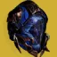
处于电弧法杖超能期间：
格挡不额外消耗超能能量。
反射的射弹伤害提高 400%（对战斗人员为基础伤害的 10 倍）。
反射射弹提供 ?% 超能能量。
可随时主动结束电弧法杖，保留一部分未用完的超能能量。
返还比例随剩余能量变化：超能能量 100% 时返还未用能量的 75%，0% 时返还 50%。
电弧法杖结束时：
触发一次电弧爆炸，伤害随已反射的射弹数量提高，并致盲 10 米内的战斗人员。
基础 675[?] 伤害，反射大量射弹后最高 2700[?] 伤害。
获得 4 层电弧武器激涌，持续 21[16] 秒。
致盲爆炸伤害无距离衰减。
反弹沙漠尾王激光很帅
使用职业技能时：
掉落一枚离别赠礼，1.5 秒后爆炸，在 7.5 米内造成 440[120] 伤害；接触地面或战斗人员立即引爆。
离别赠礼按所装备的超能附带额外效果：
电弧：致盲 10[3] 秒。
烈日：40+20 层灼烧。
虚空：压制 10 秒[对超能中的守护者无效]。
冰影：40[20] 层减速，持续 4+4[1.5+0.5] 秒。
缚丝：割裂 ? 秒。
虚空 10 秒压制和电弧 10 秒致盲都很不错
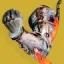
感应爆炸飞刀引爆时施加 60+0 层灼烧。
感应爆炸飞刀击杀触发点燃。
感应爆炸飞刀尚未引爆期间，基础近战充能速率额外 625%?。
灼烧每跳提供 7%[?%] 近战技能能量。
注意感应爆炸飞刀的整块能量倍率为 0.7×。
点燃击杀提供一次近战技能充能。
对烈日飞刀与枯萎之刃近战充能可溢出至 +1 次。
处于棱镜时，飞刀戏法与枯萎之刃可溢出至 +2 次。
割草最终版本增加的灼烧技能回转几乎不用担心断近战，割草爆爆爆的感觉还是很解压的职业金卡利班合成的玩法也不错
将黄金枪替换为单发高伤版本。
黄金枪超能不再享有持续型超能的技能回复。
改造后的黄金枪：
造成 12984[?] 伤害，精准倍率 2×，命中即触发点燃。
该点燃伤害覆盖其他来源，恒定提高 10%。
（相比基础神射手黄金枪打出 3 次精准命中加点燃，精准命中伤害高 85%。）
用黄金枪击杀时：
返还 33%超能能量。
战斗人员爆炸，对 ? 米内的战斗人员造成最高 400[?] 伤害。
造成精准击杀时：
额外提供 1.5%–4.5% 的黄金枪超能能量，具体数值随战斗人员档位变化。
输出金枪头是猎人最常使用的脱手大金装，并且得益于金枪狙的强势
秒大怪在不携带金枪头时金枪被视为变身大，拥有三倍的回转速度，典型的使用案例：solo 梦魇根源老一使用跳舞机+赫沃斯托夫刷大招，每只折磨者都能攒出金枪换上金枪头秒杀
使用抓钩时：
获得织造铠甲，持续 10 秒。
回复 7 点生命值。
织造铠甲生效期间：
?% 受击抖动抗性。
击杀回复 17 点生命值。
他的最大作用是贡献了职业金
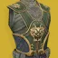
被动提供 +10 稳定性与 0.?× 举枪时长倍率。
使用职业技能时：
获得幻金链甲，持续 15 秒。
填装全部武器，并拾取 15 米内的弹药块，触发填装类武器 Perk。
幻金链甲：
+35 稳定性、+? 操控性。
冲刺速度由 8.5 米/秒 提高到 9 米/秒。
滑铲距离由 6.5 米 提高到 8.5 米。
机瞄移动速度惩罚降低 ?%。
与描述不同，实际不提供任何职业属性。
PVP
用技能对、、勇士、或造成伤害时：
获得 4 层与技能同元素的武器激涌，并高亮该战斗人员 16[11] 秒。
该增益不可刷新。
击杀被高亮的战斗人员会掉落一枚与分支职业同元素的能量拾取物。
他的最大作用是贡献了职业金
生命值全满，且击杀或 4.5[15] 秒未受伤害时：
每秒获得 6.6[1.1] 点虚空覆盖护盾，直到再次受伤为止。
持续刷新覆盖护盾的时长。
任何覆盖护盾生效期间：
+25 稳定性、+25? 操控性，精度锥范围缩小 5%。
武器对战斗人员伤害提高 15%。
热量武器改为提高 20%。
覆盖护盾生效期间击杀会预备「仓促脱身」。
「仓促脱身」在覆盖护盾耗尽时提供 +30? 敏捷，持续 5 秒。
输出命运眷顾是高贵的额外伤害乘区金装，vog 套的出现解决了压力环境下虚空盾的持续问题，泡泡偃月的利用、虚空泰坦泡泡盾的强势都让这个金装在输出场景更加频繁地出现
清怪携带双绿时最合适的机制金装，多人低压环境虚空盾被击破的频率大幅降低，提供的额外武器面板和伤害都非常舒适，NPA/石板/数据盘虚空相关的神器进一步提高了其强度。带有护甲模组感应护盾的情况下，处于生命恢复状态/恢复/拾取能量球回血（碎裂能量球/治疗能量球）时终结会有概率直接回满蓝盾。
高难绑定 vog4 使命琢面虚空箭使用，最大化武器伤害
冲刺期间：
手雷与近战回复速度 ×2｜基础手雷/近战回复速率额外 +100%。
基础职业技能回复速率额外 +100%[200%]。
每 3[6] 秒获得 1 层冰霜护甲。
PvP 中若无韵律之吟，冰霜护甲无法叠到 1 层以上。
冰霜护甲生效期间：
3 层[1 层]冰影武器激涌。
有减伤也有技能回转，需要一直跑是他最大的问题，速通/超级跳回转技能有时会使用
使用职业技能时：
对 10 米内的战斗人员施加迷惑。
迷惑：
与战斗人员迷失方向 5 秒。
音效短暂失真，短暂施加迷失方向，雷达消失 5 秒。
PVP 偶尔会有人玩
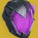
虚空隐身效果持续时间延长 2 秒。
获得虚空隐身时：
获得消逝暗影，持续 7 秒，最多 3 层。
隐身期间消逝暗影的时长不递减。
1 层 = 基础手雷与近战额外 +166.6%，职业技能回复速率 +67%。
2 层 = 基础手雷与近战额外 +333.3%，职业技能回复速率 +134%。
3 层 = 基础手雷与近战额外 +500%，职业技能回复速率 +200%。
叠到 3 层，或已满 3 层时再获得虚空隐身：
+15 点虚空覆盖护盾，持续 7+3? 秒。
单人隐身虚空猎隐身步伐+捕猎者伏击可以轻松实现无限隐身，烟雾弹改版后棱镜也能实现无限隐身，虚空猎过机制可用，也常用于沙漠飞龙爬塔
高难高难搭配心影拥有不错的表现
使用飞升或裂空打击时：
向前释放 3 枚追踪电弧射弹。
电弧射弹造成最高 200[40] 伤害并施加震颤。
手持刀剑时，电弧射弹计入刀剑的命中触发 Perk。
对 15? 米内的战斗人员施加震颤时：
获得 1 层抗性，持续 10 秒，最多 4 层。
再对 15? 米内的战斗人员施加震颤会刷新时长。
伤害抗性：
施加 1 次震颤 = 25%[5%] 伤害抗性（抗性 2 层）
施加 2 次震颤 = 40%[7.5%] 伤害抗性（抗性 3 层）
施加 3 次震颤 = 50%[10%] 伤害抗性（抗性 4 层）
高难最适合电猎的机制日常金装；对棱镜猎来说如果只是正常使用是不如曲腹蛛之灵的，但他有个额外优势，那就是持刀飞升时释放的小球是算作刀剑伤害的，对此有多种有趣的应用：狼毒叠加纳米充能层数、光剑冲击核心施加 debuff（如烈日施加被视为光剑伤害的灼烧从而不断触发圣贤套技能回转），触发 886 的起源特性给予大量技能能量的同时触发切割能量球，噩兆的冷冻钢铁，毒鲉的燃烧野心尖锐收割。
清怪升龙电猎过机制使用
虚空隐身结束时，若身处战斗人员 15 米内：
在自己脚下触发一枚陷阱炸弹。
两次触发之间有 5 秒冷却。
与捕猎者的伏击不产生联动。
处于鬼灵利刃超能期间：
重击按鬼灵利刃的命中与击杀数返还超能能量。
按命中与击杀累计的超能能量延长量：?%
每次脱离隐身时会在脚底释放一个短暂的烟雾弹，被视为近战所以也能触发焕光和战嚎炮管等等，常与潇洒行刑官搭配，然而由于存在内部冷却让本就可有可无的效果“雪上加霜”。对鬼刀只有击杀回复能量条的作用，更偏向 PVP
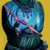
虚空隐身结束时：
获得不稳定弹药，持续 9[3] 秒。
处于虚空隐身期间使用终结技：
伤害提高 35%，持续 6 秒。
自己与 24 米内的盟友获得预备覆盖护盾。
预备覆盖护盾：
基础职业技能回复速率额外 +500%，直到使用职业技能为止。
使用职业技能时消耗，转为 40 点虚空覆盖护盾，持续 10 秒。
清怪搭配神器不稳定神枪手对虚空猎来说是优秀的走机制金装
装备虚空近战技能时，击杀处于虚弱的战斗人员：
在其死亡位置释放一团虚弱烟雾。
提供 30%虚空近战技能能量。
该烟雾在机制上就是一枚立即引爆的陷阱炸弹。
每次击杀虚弱的战斗人员会释放一个短暂的烟雾弹，但是这个烟雾弹不被视为近战，不存在冷却 CD，给予的近战回转可观，搭配潇洒行刑官+鼓舞（吃球回近战）可以刚好回转上鬼灵激涌。与一些自带易伤的武器搭配不错（杀手之牙/叛贼/心影/奇点利刃潇洒行刑官光剑等）
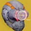
被动提供 +20 空中效率，机瞄期间雷达保持可见。
蹲下期间：
获得增强雷达（12 个扇区，常规为 6 个）。
对战斗人员造成伤害，或打破护盾时：
标记战斗人员 3 秒。
标记可穿墙显示。
战斗人员生命值低于 30% 时：
每低 1 个百分点，武器与技能伤害提高 1%。
剩 10% 生命值时为 +20% 伤害。护盾不计入生命值。
Rush对 30% 以下血量的战斗人员根据血量呈线性的所有伤害 10%-30% 增伤，曾在第一次 solo 见证者 Rush 中使用，如今这种极端环境比较少；多在 PVP 出现
装备电弧近战时：
受到近战伤害，或用充能近战命中，会为接下来 3 秒内的下一次近战命中提供交叉反击。
交叉反击使该次近战伤害提高 400%，命中回复 40 点生命值。
交叉反击的近战造成电弧伤害。
近战改版加算后由于近战拳击基础数值太低，基本不会使用
手持手炮时：
+20 空中效率，滑铲距离由 6.5 米 提高到 8.5 米。
举起手炮时：
获得非法改装枪套，持续 6 秒。
对战斗人员造成直击伤害提供层数，最多 10 层。
举起非手炮武器即移除非法改装枪套。
非法改装枪套：
+100 举枪速度操控性、0.6× 举枪时长倍率、精度锥范围缩小 30%。
每层使对战斗人员的直击伤害提高 45%，10 层时 +450%。
无礼言论每层改为 +30%直击伤害。
狂飙的超量充能弹药、隼月的超因果射击，以及其他所有非直击伤害都不受加成。
对幸运裤加成过的射击减伤 33%。
非法改装枪套到时或收枪时，若层数已达 7 层以上：
施加「运气用尽」10 秒，期间无法再触发非法改装枪套。
高难无爱爱莲娜搭配废墟石板/双增伤野兽国度搭配杀手公爵依旧有合格的表现，爱莲娜的破盾点燃能够吃到幸运裤增伤
输出无礼言论电弧复合能达到 5000+DPS 水平，可以用于打完重弹补输出
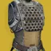
电光手雷可多连锁一次，最多命中 5 名战斗人员。
电光手雷对首个命中目标施加震颤。
施加震颤时：
提供 15% 电光手雷手雷技能能量。
触发震颤连锁伤害时：
提供 7.5% 电光手雷手雷技能能量。
碍于电光雷的伤害只能成为割草金装，最好搭配伏特子弹武器使用
装备电弧或冰影超能技能时：
闪身替换为位移。
不替换特技闪身。冷却与整块能量倍率按射手闪身计算。
使用职业技能时：
快速位移最多 12 米，位移期间隐身且无敌。
获得 1 层凌光偏转，持续 11 秒，最多 3 层。
凌光偏转：
1 层 = 10%｜2 层 = 21%｜3 层 = 33%，提高电弧、冰影与狼王的武器伤害。
对受冰影减益影响的战斗人员，武器伤害额外提高 10%。
生效期间武器击杀提供 60%职业技能能量。
该增伤与其他增益叠乘。
高难药剂神器风寒+冰冷伺候的组合实现了不依靠击杀的自回转闪身，满层 buff 提供对电冰武器以及狼王的 33% 额外乘区增伤加上冰影 debuff 目标的 10% 能够获得夸张的 46% 额外乘区，在裁决定论/末日先知混乱无序如此强势的版本吃到不少红利
割草电弧导体故我在是经典搭配，也有死亡信使、线圈等等玩法，一些速通场合下也会使用
枯萎之刃命中与弹跳时：
在第 1 次与第 3 次弹跳处生成一块小型冰影水晶。
提供固定 7.5%近战技能能量。
用枯萎之刃碎裂一块冰影水晶时：
在该冰影水晶附近呈 120° 释放 3 枚冰影射弹。
冰影射弹命中处生成一块小型冰影水晶。
高难优秀的控场、清怪和自回转能力，造出的冰块会吸引战斗人员仇恨，是棱镜/冰影分支非常强力的金装
清怪同上
跑图造地形、超级跳/触发利刃专注
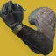
被动为手枪提供 +50 空中效率、+100 操控性与 +100 填装速度。
重伤时举起手枪：
获得增伤，并补满手枪弹药。
增伤：
手枪伤害提高 100%[10%]。
手枪击杀补满弹匣。
重伤期间该增伤没有计时。
护盾恢复后开始 5 秒计时。
手枪击杀把计时刷新到 3 秒。
曾经有最终警告左键锁定右键点射 15 发的极限猴戏输出玩法，触发增伤条件过于苛刻，并且在双倍增伤 bug 修复后伤害跟不上。现在基本没有使用场景
线织尖刺可弹向缠结，引爆后立即回手。
用线织尖刺引爆缠结并接住时，自动拾起一枚缠结。
这样拾取的缠结计入元素拾取物的相关联动。
没接住上述线织尖刺时，在自己周围触发一次缚丝爆炸。
该爆炸在 9 米内造成 727[?] 点缚丝近战伤害，无距离衰减。
未接住的爆炸吃近战增伤，也触发近战联动。
未接住的爆炸不计为缠结伤害。
接住未命中缠结的线织尖刺，额外返还 25%近战技能能量，不受近战属性影响。
贪婪 4 螺旋丸的伤害非常优秀，没有生存压力时可用
击杀累积飞翼日蚀的充能，最多 6 份。
= 1｜ = 2｜及以上与 = 3
充满时提供 2 次飞翼日蚀手雷充能。
投出最后一只蛾笼后有 6 秒冷却，冷却结束才能重新累积。
飞翼日蚀：
命中处释放 2 只飞蛾。飞蛾元素取 20 米内最近的 2 个目标而定。
20 米内没有目标时，默认为虚空飞蛾。
最近目标是战斗人员时释放电弧飞蛾，以约 10 米/秒 追击，接触即引爆。
电弧飞蛾造成最高 473[守护者 31｜构造体 201] 点电弧手雷伤害，并在 4 米半径内致盲。
最近目标是盟友时释放虚空飞蛾。
虚空飞蛾以约 25 米/秒 追向盟友，接触提供 22.5 点虚空覆盖护盾。
清怪不祥之兆特殊联动，改版后也不会挤占掉原本的手雷，建议搭配药剂包神器使用，虽然本身弹药生成够高但是每盒弹药总伤较低，需要注意弹药经济管理
高难同上，致盲+虚空覆盖护盾能够提供优秀的生存能力，电飞蛾的索敌有小问题是减分项
被动为弓箭提供 +40 空中效率与 +10 蓄力时间。
+10 蓄力时间等同于蓄力时间大师杰作。
弓箭可无限期保持满蓄力。
主要弹药弓箭达到满蓄力 0.35 秒后：
每 0.5 秒提高一档伤害，2 秒后对战斗人员的直击伤害最高提高 200%。
狩猎箭头、毒素、冰影水晶、蜻蜓/爆炸箭头等效果不受加成。
满蓄力保持 4 秒后该增伤消失。
在最终版本加强之后还是碍于弓箭的孱弱没有太多使用空间
额外提供一次烟雾弹近战技能充能。
虚空隐身提供 50%[10%] 伤害抗性（抗性 4 层）。
让盟友获得虚空隐身时：
每名进入隐身的盟友提供 50%近战技能能量，4 名时共 200%。
盟友开始回复生命值。
由全知之眼持有者使其隐身的盟友共享该伤害抗性。
超能期间不享有该伤害抗性。
全队隐身常用于玻璃拱顶迷宫，虽然改版后有不错的团队辅助效果但没有太多上场空间
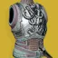
为烈日近战技能额外提供一次近战充能。
所有近战充能同时回复。
若最近 ? 秒内用过近战技能，则不会同时回满全部近战充能。
（例：用赌徒闪身时两次充能一并回满。）
用飞刀击杀时：
飞刀伤害提高 67%｜133%｜200%，持续 5 秒。
使用赌徒闪身刷新该时长。
清怪近战增伤非常慷慨，多一层充能降低容错，是火猎优秀的机制与割草金装，可搭配雪上喷使用
狩猎陷阱按被束缚的战斗人员数量返还技能能量：
每名返还 X%超能能量，最多 50%。
10%手雷技能能量
10%近战技能能量
10%职业技能能量
莫比乌斯箭袋每次施放可多发射一轮，持续时间延长 4 秒。
输出仅限搭配需求层级的输出选择
电弧法杖命中提供 1 层突触接合，持续 5 秒，最多 3 层。
电弧法杖伤害施加震颤。
掌击爆发（轻-轻-重）吃到 1.5 倍的增伤。
突触接合 1 层 = 伤害 +27%（40%），超能被动流失减慢 20%。
突触接合 2 层 = 伤害 +61%（96%），超能被动流失减慢 40%。
突触接合 3 层 = 伤害 +105%（174%），超能被动流失减慢 60%。
输出电猎配合 NPA 雷霆反击（30%）使用，近身输出非常优秀的伤害变身大；利用风寒获得冰霜护甲后切到护盾粉碎神器（50%）拥有更高的上限，但是操作比较复杂
高难需要相当程度技术基础的高难电猎解法之一，搭配维王者之剑能够单通终极征服炽天使
施放风起云涌时：
? 米内的战斗人员被闪电击中，受到 650[?] 伤害并被施加震颤。
自己与 ? 米内的盟友获得增幅。
落雷按命中与击杀受电弧减益影响的战斗人员返还超能能量。
命中：T1 = ?%｜T2 = ?%｜T3 = ?%｜T4 = 25?%
击杀：T1 = ?%｜T2 = ?%｜T3 = ?%｜T4 = ?%
最多返还 50%超能能量。
击杀受电弧减益影响的战斗人员时：
额外提供风起云涌的超能能量。
= 1%｜ = 2.5%｜及以上 = 4%｜ = 4%
搭配铁旗套在怪堆中一次可以把大招将近回满
被动为主要武器提供 +20 空中效率。
主要武器腰射期间：
+30 敏捷、+5 射程、+30 稳定性，
精度锥范围 −30?%、精准判定角度 +2?°，
瞄准辅助与伤害衰减距离 +20%。
死者传说、遗言与汤米的火柴盒不吃衰减加成，精度数值另有调整。
精度锥的具体数值无法实测，但高到足以抹平任何精度锥扩张。
主要武器击杀提供职业技能能量：
= 34%｜及以上 = 100%｜ = 20%
职业技能能量已满时，用主要武器每 6 秒内连续击杀把计数推满 100%：
= 34%｜及以上 = 100%｜ = 100%
额外提供一次职业技能充能，最多额外 2 次。
清怪光辉跳舞机是猎人最强大的顶级机制金装，常见于单绿的使用场景，单人、多人、首日、日常都有他的身影出现，搭配焕光闪身飞升绿人为团队提供优秀的辅助
与冬日之触同时装备时：
冰影水晶由中型变为大型。
减速场半径再 +50%，合计 +75%。
强化暮域手雷：
减速场半径 +25%。
生成一块中型冰影水晶。
处在暮域手雷的减速场内时：
战斗人员造成的伤害降低 50%[20%]。
自己与盟友立刻获得 1 层冰霜护甲。
之后每 0.5 秒再获得 1 层。
在门徒 dayone 迎来了他的高光时刻，此后一蹶不振，如今他的作用是贡献了职业金
用充能近战或抓钩近战击杀，或使用终结技时：
获得噩梦激励，持续 7 秒。
噩梦激励｜伤害提高 35%[20%]，+? 操控性，+50 空中效率。
补满收起的武器。
不与强化增益叠加。
获得噩梦激励后举起另一把武器：
刷新噩梦激励的时长。
噩梦激励生效期间用武器击杀会重新触发噩梦激励，让下一次换枪也吃到上述加成。
适合没有焕光并且近战有击杀和回转能力的分支使用，比如电、冰、缚丝，会有一些小众场景下的使用
用烈日近战技能击杀提供 2.5%–5% 的利刃弹幕超能能量，具体随战斗人员档位变化。
利刃弹幕的命中与击杀最多返还 50%超能能量，返还量不受超能属性影响。
返还量取决于命中数、击杀数与战斗人员档位。
≈ 20%｜ = 50%
利刃弹幕的直击伤害与爆炸伤害提高 25%。
每命中 5 把飞刀触发一次延迟的烈日爆炸，每次施放最多 2 次。
每次爆炸在 10 米内造成无衰减伤害，并释放 4 枚弹片。
第 1 次爆炸 = 5852（对 3804）伤害｜第 2 次 = 6437（对 4184）伤害。
弹片在 ? 米内造成最高 290（对 190）伤害，并施加 20+0? 层灼烧。
超能增伤只作用于飞刀直击伤害、爆炸与点燃伤害。
零投入下对的伤害约提高 140%。
击败他们把利刃弹幕对的伤害由约 21K 提高到约 26K（约 +25%）。
输出加拉诺火刀是目前伤害最高的脱手大，结束时还会返还一半的大招能量，搭配松身裤或噬星者之鳞 vog 套可以快速转出下一个大招，强大且常用的输出选择
额外提供一次弹跳手雷充能。
每获得 1 层电光充能提供 ?%手雷技能能量。
弹跳手雷的子机追击战斗人员更加激进。
弹跳手雷命中提供 4.2%[1.4%]手雷技能能量与 1 层电光充能。
每一次直击伤害与爆炸伤害都各算一次命中。
叠到 10 层电光充能时：
为自己与 ? 米内的盟友回复 ? 点生命值。
提供约 40%手雷技能能量。
下一枚投出的弹跳手雷被强化，多弹跳一次。
强化后的弹跳手雷在第 1、2 次弹跳各多释放 5 枚追踪弹。
高难优秀自洽的金装机制，拯救了电猎的高难玩法，使用庆典飞行等高频叠加电光充能的武器搭配废墟石板能够做到无限投掷弹跳雷，电光充能的无限获取也解决了近战技能的回转问题。与松身裤类似，需要战斗人员有一定的血量才能实现良好的技能回转
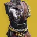
额外提供一次职业技能充能。
被动附带一份收割者的效果。
多一层闪身和产球，仅此而已
使用职业技能时：
填装全部武器，并拾取 15 米内的弹药块，触发填装类武器 Perk。
为自己与 15 米内的盟友提供 1 层紧身，持续 15 秒。
紧身生效期间：
闪身再叠 1 层，最多 5 层，并刷新时长。
刷新时，范围内的盟友层数与穿戴者对齐。
+40｜+40｜+45｜+50｜+55 填装速度
—｜0.925×｜0.915×｜0.91×｜0.89× 填装时长倍率
+40?｜+40?｜+45?｜+50?｜+55? 操控性
紧身生效期间每 3 秒内连续造成直击伤害会推进计数，推满 100% 提供 20%职业技能能量：
微型冲锋枪、追踪步枪 = 7.14%｜｜自动步枪、机枪 = 8.33%｜｜脉冲步枪 = 9.1%｜｜手枪 = 12.5%｜｜手炮、斥候步枪 = 16.7%
刀剑 = 20%｜弓箭、偃月、榴弹发射器、霰弹枪、狙击步枪 = 34%
输出驱逐引擎+裁决定论+混乱无序，配合充沛和面面俱到回转火刀；还有千语火粪坑的玩法，但总的来说前者更优秀
高难除了电冰分支有更好的选择，松身裤在棱镜、火、虚空、缚丝分支上都是强度顶级的配装。分为迷失信号/驱逐引擎的杀手公爵分支和庆典飞行的废墟石板/女王香炉分支
清怪松身裤需要一个相对压光的环境才能发挥出他的优势，战斗人员血量足够才能有效地回转技能
能量球额外提供 2%超能能量。
所选超能为三连发黄金枪时，额外量降到 0.5%。
超能充满期间拾取能量球提供 1 层光能盛宴。
施放超能时：
消耗全部光能盛宴层数，回复生命值并提高超能伤害，持续 14 秒。
超能伤害 +18.2%｜+36.4%｜+54.6%｜+59.7%｜+64.8%｜+70%。
回复 ?｜?｜?｜?｜?｜200 点生命值。
满 6 层光能盛宴时施放超能：
额外获得 100 点覆盖护盾，持续 16 秒。
输出吃能量球提供额外超能能量，搭配加拉诺 vog4 一轮狼毒纳米突袭就可以转出一个火刀，顶级的刀剑输出玩法
处于空中时，对战斗人员减伤 30%。
滑铲距离由 6.5 米 提高到 8.5 米。
大幅强化全部跳跃。
用偃月近战击杀时：
向弹匣溢出 1 发弹药，弹匣容量最多提高 100%。
15 米内有 3 名战斗人员时：
+50 填装速度，偃月近战伤害提高 200%。
条件不满足后再保留 5 秒。
用偃月射弹击杀时：
战斗人员爆炸，在 4? 米半径内造成最高 350[101] 点与武器同元素的伤害。
适合搭配 NPA 维王者（或其他偃月）升龙电猎使用；冰猎寒冬之啮废墟 4 可以赖着不死，依靠碎冰双倍增伤出伤，但是不吃碎冰双倍而且对偃月近战有减伤非常刮
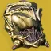
使用职业技能时：
获得 2 层治愈。
每 3 秒内连续用烈日击杀把计数推满 100%：
= 34%｜及以上与 = 50%
获得 1 层燃烧之魂，持续 10 秒，最多 3 层。
全部层数同时到时。重新触发燃烧之魂会刷新时长。
燃烧之魂：
烈日手雷、近战、职业与超能技能伤害提高 15%。在棱镜上对烈日技能同样生效。
职业技能的治疗效果被强化，并扩散到 15? 米内的盟友：
1 层 = 3 层治愈。
2 层 = 1 层治愈加 1 层恢复，持续 3+1.5 秒。
3 层 = 2 层治愈加 1 层恢复，持续 5+2.5 秒。
若恢复已在生效，则按对应时长延长。
以辅助队友为主的金装，叠满层需要大量烈日击杀，对技能的增伤也很有限，职业金版本甚至不要求烈日击杀，依赖职业技能回转；看起来很美好但是由于发挥出实力的条件过于苛刻实战没有那么理想
固有为全部手雷提供快速球，感应手雷以外的手雷同样生效。
强化感应手雷：
爆炸伤害 +14%。爆炸的长与宽提高到 14 米。
爆炸不再造成自伤，且无距离衰减。
感应手雷持续时间变为 30 秒，本体 70 点生命值。
手雷与近战技能命中提供 30%[7%]感应手雷手雷技能能量。
手雷/近战造成的第一跳灼烧同样触发上述手雷能量返还。
两次手雷能量返还之间有 0.3 秒冷却。
速射神枪的命中各提供 10%[?%]感应手雷手雷技能能量。
割草还不错，面对单个怪需要依靠圣贤 2 补充部分回转才能实现无缝丢技能，搭配药剂包挽歌勉强可以下高难
强化勇士之鞭：
勇士之鞭施加的悬停延长 3 秒。
对的悬停再延长 2 秒。
屏障：
多生成 2 条鞭。
鞭追击战斗人员更加激进，飞行距离增加 16.7%（5 米）。
推进器：
生成一枚缠结，最长存在 ? 秒，会朝 ? 米内的战斗人员抛掷自身，接触即引爆。
施加悬停时：
获得织造铠甲，持续 10 秒。
高难中止之跃类似于泰坦版本的曲腹蛛，在勇士之鞭增加了回转之后多用在泰坦的一些枪械玩法上。典型例子比如光剑
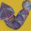
近战命中提供 1 层护甲充能。
护甲充能生效期间：
对战斗人员的近战伤害获得减伤。
被近战攻击命中时触发一次电弧爆发，消耗全部护甲充能。
电弧爆发施加震颤，并在 ? 米半径内造成电弧伤害。
电弧爆发：
90｜130｜170｜200｜225｜245 点电弧伤害
对战斗人员近战减伤 23.3%｜46.7%｜70%｜73.3%｜76.7%｜80%
PVP
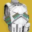
被动为自动步枪与机枪提供 +30 空中效率。
手持的自动步枪与机枪每 1.5 秒补充 10% 弹匣。
用自动步枪或机枪击杀时：
获得 1 层自动填装链，持续时间随层数变化，最多 10 层。
到时只掉 1 层，不是全部清空。
自动填装链：
10 层时伤害最高 +15%，+? 稳定性，+50 弹药生成。
伤害 +1.5%｜3%｜4.5%｜6%｜7.5%｜9%｜10.5%｜12%｜13.5%｜15%
稳定性 +?｜—｜+?｜+?｜+?｜+?｜+?｜+?｜+?｜+?
弹药生成 +5｜+10｜+15｜+20｜+25｜+30｜+35｜+40｜+45｜+50
每层时长 7｜6.5｜6｜5.5｜5｜4.5｜4｜3.5｜3｜2.5 秒
清怪钻机胸的自动填装和增伤都是其次，最重要的是依据层数为自动步枪/机枪提供 0-50 的弹药生成，对单人合唱/机枪的弹药经济有显著提升
用充能电弧近战击杀时：
提供 100%近战技能能量，并开始回复生命值。
近战命中提供电弧近战技能能量，每次近战最多触发一次。
充能近战命中：50%近战技能能量。
重击生效期间非偃月近战命中：15%。
基础/偃月近战命中：5%。
清怪雷霆一击的 80% 减伤、优秀伤害、以及配合重击的回血能力让他成为泰坦最优秀的机制金装之一
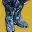
冲刺至少 1.5 秒后滑铲，且职业技能能量已满时：
在正面张开 180° 护盾，反射伤害与射弹，持续 0.45 秒。
反射的射弹伤害提高 50%。
每反射 1 点伤害消耗 2%职业技能能量。
不应该使用
把屏障冷却改回 Edge of Fate 之前的数值，职业技能回复速度约 ×1.45。
巍峨屏障 101 秒 → 70 秒｜集结屏障 55 秒 → 38 秒
使用职业技能时：
手雷技能替换为屏障手雷。
职业技能回满时屏障手雷即丢失。
屏障手雷命中处生成一座屏障。
落点 5 米内的战斗人员迷失方向。
屏障生成后 2 秒内不造成碰撞伤害。
屏障类型取所选屏障，并继承堡垒、鞭一类星相。
非屏障类职业技能默认按巍峨屏障及其冷却处理。
拾取 3[?] 枚能量球后：
强化屏障手雷，呈 ◯ 形生成 3 座屏障，彼此相隔 120°。
集结屏障挨得较近，巍峨屏障铺得较开。
高难vog4 的最大收益者，被动提供的 1.45 倍职业技能回复效果是电泰坦的优质选择，虽然三个小盾并不会叠加电光充能层数，但是小盾的仇恨吸引、阻挡四面八方的射弹、致盲贴脸的战斗人员给的生存能力超乎你的想象
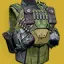
被动附带一份火力无限的效果，并额外提供一次手雷技能充能。
武器击杀提供 10%手雷技能能量。
使用手雷技能时：
补满弹匣／清空 100% 热量。
输出自带一个没有冷却 cd 的爆破专家，让他在输出领域有自己的一席之地（如：集体爆破筒子），击杀也有 10 手雷能量回转。如果其他职业的两兄弟也能拥有类似改动就好了
强化融合手雷：
固有附带快速球。
手雷命中即引爆。
命中可眩晕势不可挡勇士。
用融合手雷击杀提供固定量手雷技能能量。
= 25%｜ = 50%｜与 = 100%｜ = 100%
2 火力无限+支配+恢复能量球+炽热余烬+贪婪 4+醒神丝线，每五秒扔一次雷就能实现击杀一个也是无限融合雷，可以搭配死亡信使使用。
对爆炸自伤减伤 75%。
击杀为爆炸波行者充能：
= 10%｜及以上 = 25%｜ = 20%
阿莱索尼姆的遗存 = 10%
在充能 100% 时
造成战栗打击和风暴怒吼伤害，或受到爆炸自伤：
把穿戴者向后弹开 25 米，并提供 5 层冰霜护甲。
释放一道扩散的冰影波形，在 15 米内施加冻结[? 层减速，持续 ? 秒]。
射出 8 枚追踪弹片，命中各在 8 米内造成 623[?] 点冰影伤害。
自伤触发时弹道呈抛物线，战栗打击/风暴怒吼触发时直线向前。
弹片的击杀不为爆炸波行者充能。
爆炸箭头、高爆载荷与延时载荷虽然不造成自伤，也能触发爆炸波行者。
阿莱索尼姆的定制金装，适合搭配药剂包使用，风寒可以配合稳定 5 层冰霜护甲，大型爆炸冻结效果很炫酷
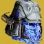
钻石长矛命中处生成一块冰影水晶。
命中以上的战斗人员时生成 3 块冰影水晶。
钻石长矛伤害随冰霜护甲层数提高。
1 层 = +144%｜2 层 = +253%｜3 层 = +333%｜4 层 = +389%｜5 层 = +428%｜6 层 = +455%｜7 层 = +475%
钻石长矛的砸击先给冰霜护甲再造成伤害，因此必定吃满增伤。
装备冰影超能技能时，以下任一条件生成一支钻石长矛：
处在集结屏障后方，3 秒内造成 3 次精准命中；
每 3 秒内连续用冰影武器命中把计数推满 100%（冰影身体命中 = 5%｜冰影精准命中 = 12%）；
或用冰影武器击杀 2 名战斗人员。
有 ?[8] 秒冷却，与钻石长矛星相共用。
铸造者框架刀剑重击释放弹射物后，拾取钻石长矛可以吃到增伤。
高频冰武器伤害可以快速产冰矛，并且随着冰霜护甲层数提高冰矛伤害，跟风寒冰区域拒止很相配；存在 bug，在释放铸造者右键瞬间捡起冰矛可以让铸造者获得冰矛的增伤造成大量伤害（该伤害不被视作武器伤害，所以也不吃武器增伤）。绑定冰大招以及和钻石长矛星象共享冷却都是减分项。
把巍峨屏障改为突击屏障。
突击屏障允许自己与盟友从中射击。
对突击屏障伤害提高 60%（有效生命值 312.5）。
PVP
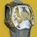
使用职业技能时：
以自己为中心，立刻为 12 米内视线可及的自己与盟友回复生命值与护盾。
回复量取所装备的职业技能而定。
屏障回复 160 点生命值与 110 点护盾；推进器回复 60 点生命值。
治疗盟友提供 ?%职业技能能量，每 1? 秒最多一次。
处在屏障后方时，每 3 秒内连续造成直击伤害会推进计数，推满 100% 触发一次额外治疗脉冲，在 12 米内回复 30 点生命值：
微型冲锋枪、追踪步枪 = 7.14%｜｜自动步枪、机枪 = 8.33%｜｜脉冲步枪 = 9.1%｜｜手枪 = 12.5%｜｜手炮、斥候步枪 = 16.7%
刀剑 = 20%｜弓箭、偃月、榴弹发射器、霰弹枪、狙击步枪 = 34%
触发后有 2 秒冷却，冷却期间的命中不计数。
触发治疗脉冲后有 5 秒冷却，冷却结束前其他脉冲不会再回复生命值。
这两个冷却确实不同步。
超能技能额外生成一枚能量球，提供 7.14%超能能量。
黎明护罩共生成 4 枚，每枚提供 3.57%，合计 14.3%超能能量。
释放小盾时的爆发治疗不错，给予的职业技能回转能解决小盾衔接问题；释放后 2 秒冷却 3 秒计数的 30 点回血根本微不足道；没有太多使用用途，本质还是小盾减伤吸引仇恨足够强力
雷霆冲击伤害提高 55%。
雷霆冲击结束时：
50%[10%] 伤害抗性（抗性 4 层），持续 5 秒。
处于增幅期间用近战击杀时：
按战斗人员档位额外提供超能能量。
T1 = 2.5?%｜T2 = 2.5%｜T3 = ?%｜T4 = 3%｜ = ?%
对任何超能技能都生效。
输出泰坦唯一最好用的脱手大增强金装，含金量自不用多说，抵抗 4 和大招回转都是锦上添花
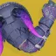
每 10 秒内连续用虚空击杀 2–3 名战斗人员，提供 1 层虚空武器激涌，持续 11[6] 秒，最多 4 层。
满 4 层后再击杀会刷新时长。
用充能虚空近战击杀时：
提供 20%[10%]超能能量，每次近战施放只触发一次。
提供 4 层虚空武器激涌，持续 11[6] 秒。
哨兵圣盾的圣盾投掷命中提供 10%超能能量，并延长超能时长。
哨兵圣盾轻攻击击杀提供 100% 圣盾投掷能量。
输出/大招回转哨兵圣盾输出指定金装，在周围有小怪的情况下可以依靠飞盾延长举盾时间；过机制时使用虚空充能近战击杀回转 20% 超能能量相当可观，可以与蒙特卡洛、拳击手/集体拳击的虚空武器搭配解决近战回转问题
冲刺速度由 8 米/秒 提高到 8.5 米/秒。
滑铲距离由 6.5 米 提高到 8.5 米。
冲刺 1.5 秒后：
获得线性促动器，持续 7 秒。
线性促动器生效期间近战直接命中：
消耗线性促动器，施加电击 2 秒。
被电击的战斗人员向 12 米内未被电击的战斗人员释放一道静电充能。
静电充能造成 220[50] 伤害并施加电击。
电击向其他战斗人员传导时刷新，每次触发线性促动器最多传 6 次。
每施加一次电击提供 2 层电光充能。
被电击期间的 2 秒内免疫后续连锁伤害。
PVP
每 10 秒内连续用电弧击杀 2–3 名战斗人员，提供 1 层电弧武器激涌，持续 11[6] 秒，最多 4 层。
满 4 层后再击杀会刷新时长。
施放浩劫之拳时：
获得 75 点覆盖护盾，免除精准伤害加成。
覆盖护盾存在期间，5 秒未受伤害后开始回充，7 秒回满。
浩劫之拳的击杀提供 ?%超能能量。
浩劫之拳结束时：
提供 4 层电弧武器激涌，持续 30[6] 秒。
PVP，PVE 也不是不能玩
装备烈日超能技能且超能已充满时：
技能击杀提供 2 层治愈，并提供日焰熔炉层数，最多 10 层，持续 20 秒。
= 1 层｜ = 2 层
未充能的近战击杀同样提供治愈与层数，偃月近战不算。
日焰熔炉：
手雷与盾爆屏障的击杀触发点燃，手雷元素不限。
基础手雷与职业技能回复速率最高额外 +250%。
超能伤害 +6.5%｜13.6%｜22%｜32%｜43%｜57%｜73%｜93%｜118%｜150%。
基础手雷/职业技能回复速率额外 +?%｜?%｜?%｜?%｜?%｜?%｜?%｜?%｜?%｜250%。
施放超能时｜日焰熔炉层数冻结，既不增也不减。
超能结束时｜消耗全部层数，按层数返还超能能量。
1 层 = 8%｜2 层 = 20%｜3 层 = 26%｜4 层 = 33%｜5 层 = 45%。
输出小锤 6000DPS、大锤 8000DPS，要注意需要一直点击左键并且按住方向键才能吸住
造成 1 次精准击杀、4 次武器击杀，或用精准命中把计数推满，提供 1 层移民号微型导弹，最多 6 层。
精准命中计数：
追踪步枪、Vex 揭秘者：10%
自动步枪与机枪：15%
脉冲步枪、手枪与血色浪漫：20%
手炮、斥候步枪与霰弹枪：40%
弓箭、线性融合步枪、火箭手枪与狙击步枪：67%
计数在填装火箭时不清零，因此有些武器会出现交替发数（例如手炮 3 → 2 → 3 发）。
放置屏障或使用推进器时：
消耗全部层数，每层发射一枚追踪的动能微型导弹，每枚在 ? 米内造成最高 540[28] 点动能伤害；每命中一次提供 1 层移民号微型导弹，持续 10 秒。
移民号微型导弹提高火箭与微型导弹类武器的伤害，6 层时 +35%。
1 层 = 10%｜2 层 = 17%｜3 层 = 24%｜4 层 = 30%｜5 层 = 33%｜6 层 = 35%
输出会使用的两种情况①搭配不稳定神枪手回转小盾争取导弹的伤害而并非武器增伤；②真相短轴爆发。是这是因为增伤时间太短只有 10 秒，小盾的回转至少要 20 秒；而且需要精准伤害叠层，这与爆炸武器的玩法不符（火箭脉冲除外）。
使用手雷或职业技能，或造成充能近战伤害时：
为另外两项技能各提供 1 层强化技能，持续 5 秒，最多 2 层。
施放超能技能会清掉全部层数。
例：造成雷霆一击伤害 → 手雷与职业技能回复加快。
1 层 = 基础手雷与近战回复速率额外 +400%[100%]｜2 层 = +800%[200%]。
1 层 = 基础职业技能回复速率额外 +25%｜2 层 = +50%。
1 层 = 手雷伤害 +20%[10%]｜2 层 = +35%[20%]。
1 层 = 近战伤害 +25%｜2 层 = +50%。
界面上的层数显示与实际生效的技能回复并不一致。
接上例：近战给出的强化 1 层还没到时就使用职业技能，手雷强化会升到 2 层并刷新时长，近战获得 1 层强化持续 5 秒，而职业技能那一份不会刷新——尽管界面写着强化 2 层。
在 buff 改到 5 秒后一蹶不振，玩冰泰坦扔雷还挺有意思
黎明护罩给出的光之武器现在可在护罩外保留 15 秒。
以下全部只在光之武器生效期间成立：
平均每造成 600 点伤害以及每次击杀提供 1 层圣人，最多 14 层。
伤害 = 1 层｜ = 1 层｜ = 2 层｜及以上 = 3 层｜ = 3 层
圣人的持续时间等于当前黎明护罩的剩余时间。
伤害门槛不受压光影响（任何难度下需要的命中数相同）。
攒 1 层圣人所需的最小伤害与命中数按门槛分档：
>2445 打 2 发｜>767 打 3 发｜>135 打 4 发｜>109 打 5 发｜>108 打 6 发｜>89 打 7 发｜>77 打 8 发，以此类推，平均每层 600 点伤害。
用动能或虚空伤害／击杀满足上述同一条件时：
在目标周围 7 米半径内施加压制 6[?] 秒。
拾取黎明护罩核心会消耗全部圣人层数，每次施放超能最多延长两次，上限为该超能施放时的最大时长。
第一次延长（圣人层数 + 1）秒，14 层时最多 +20 秒。
第二次延长降为每层 1 秒，10 层时最多 +10 秒。
输出适合泰坦单人搭配霸道回声，为揭纱露眼一直触发填装无需换弹
割草裂波者废墟石板无限泡泡盾的割草玩法很有意思
装备冰影超能技能时：
职业技能改为生成冰影水晶。
集结屏障与巍峨屏障替换为冰川壁垒。
冰川壁垒由 4 块中型水晶加中间 1 块小型水晶组成。
冰川壁垒继承集结屏障的加成，水晶全碎后依然生效。
屏障冷却按巍峨屏障计算。
使用推进器时：
在身前呈 V 形生成 2 块冰影水晶。
不继承集结屏障加成，也不改写冷却。
风暴怒吼改版前对冰泰坦是不错的金装，但是现在他的最大作用是贡献了职业金版本
装备冰影超能技能时：
每获得 1 层冰霜护甲回复 10 点生命值。
每 3 秒内连续用冰影击杀 2 名战斗人员提供 1 层冰霜护甲。
屏障类职业技能替换为冰川守卫。
屏障冷却改写为 70 秒。
施放冰川守卫时：
为自己提供满层冰霜护甲。
对 ? 米内的战斗人员施加 100[40] 层减速。
神器治愈能量球让他成为合成手的下位，如果玩醒神丝线丢雷冰泰坦可以解决回血问题
烈日击杀提供 15%职业技能能量。
两次由烈日击杀提供职业技能能量之间有 1? 秒冷却。
装备烈日超能技能时放置屏障：
向最远 18.5 米释放 3 道追踪的烈日波形。
烈日波形：
每道造成 480[100] 伤害并施加 60+30[30+15] 层灼烧，伤害不可重叠。
烈日波形命中[击杀]处会在战斗人员脚下生成太阳黑子。
烈日波形既不吃咆哮烈焰的加成，也不触发它。
由凯布利的烈日波形触发的灼烧效果失去 PvE 的 3 倍加成。
也就是说点燃伤害降低 66.7%。
另外由于太阳黑子灼烧本身的怪异表现，不带骨灰余烬约需 5.3 秒才点燃，带骨灰余烬约 1 秒。
火泰坦光剑能玩，可惜点燃是最低倍率，他的职业金版本或许更加优秀
跃升期间可腰射与机瞄，并被动提供 +50 空中效率。
跃升时长提高到 4 秒。
跃升时长：
高跳跃升：2.6 → 4 秒（+54%）
专注跃升：2.2 → 4 秒（+82%）
弹射跃升：1 → 4 秒（+300%）
主要武器腰射期间：
+5 射程、+30 稳定性，
精度锥范围 −30%、精准判定角度 +2?°，
瞄准辅助与伤害衰减距离 +20%。
死者传说、遗言与汤米的火柴盒不吃衰减加成，精度数值另有调整。
跑图泰坦优秀的跑图金装，搭配刀剑可以无限跳跃
装备烈日超能技能时：
职业技能已充能且进入重伤，或装备集结屏障、巍峨屏障时使用职业技能：
在自己脚下生成一个太阳黑子。
由重伤触发时消耗一次职业技能充能。
生成的太阳黑子即使不装备星相也提供无敌索尔。
但不装备星相时太阳黑子时长无法延长。
盾爆星象能够触发两次太阳黑子，但是可惜没法吃到太阳黑子的技能冷却提升。如果给予的还是曾经的恢复 2 那将是非常优秀的金装
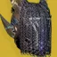
受到战斗人员伤害时：
提供 5% 手雷、近战与职业技能能量。
两次触发之间有 1 秒冷却。
装备虚空超能技能时：
每 5 秒内连续击杀 3 名战斗人员，或在重伤时击杀：
获得吞食，持续 5+2.5 秒。
PVP，棱镜能拿吞噬但是没那么有用
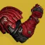
拾取一枚焰灵，或每 3 秒内连续用烈日击杀 3 名战斗人员：
获得锻造大师，持续 12 秒。计时从使用投掷飞锤那一刻才开始走。
首次激活锻造大师提供固定 11.7%近战技能能量，持续 8 秒。
锻造大师生效期间：
按近战键可召回投掷飞锤，全额返还。
投掷飞锤的追踪性提升。
投掷飞锤命中后 2? 秒再召回即为完美回收。
完美回收触发一次爆炸，在约 5 米内造成最高 290[?] 伤害。
每次完美回收与每枚额外拾取的焰灵把时长延长 3 秒，最长 12 秒。
他很好玩，棒鸡曾经为了他给小锤增加了 0-36% 乘算的随距离变化增伤
无畏护甲的护盾生效期间：
每 1.5 秒提供 1 层电光充能。
速度加成生效期间：
在身后留下一片区域，为盟友提供速度加成。
不觉得带着队友一起冲锋很有救赎感吗
被动为霰弹枪提供 +? 填装速度与 +30 空中效率。
用霰弹枪或近战连续击杀把计数推满 100%：
= 34%｜及以上与 = 50%
开始回复生命值。
增幅、恢复、虚空覆盖护盾、冰霜护甲或织造铠甲生效期间：
霰弹枪伤害提高 35%[10%]。
近战伤害提高 30%[?%]。
霰弹枪与近战击杀把上述效果的时长延长 5 秒，不超过各自原有上限。
虚空覆盖护盾生效时额外 +15 点。
超能近战伤害同样提高 30%，与护盾粉碎的 +50% 加算。
计入的招式：浩劫之拳轻攻击｜烈焰战锤弹片｜哨兵圣盾轻攻击｜冰川震击轻攻击与冰川震击期间的风暴怒吼。
输出泰坦的单人输出最佳金装，有电泰坦的聚合+换挡/战壕裁决定论；也有虚空泰坦的全明星动能合成完美悖论/威胁等级
高难高难通常与杀手之牙搭配使用，骑士之火打雷电泰坦或者棱镜泰坦都是可行的选择
受到伤害时：
高亮第一个造成伤害的战斗人员 8 秒。
同时只能高亮一名战斗人员。
击杀被高亮的战斗人员提供复仇——95 点覆盖护盾，持续 6 秒。
复仇生效期间无法再高亮战斗人员。
PVP，PVE 也不是不能玩
咆哮烈焰的层数提高烈日武器与点燃伤害。
咆哮烈焰 1 层｜武器伤害 +6%，点燃伤害 +15%。
咆哮烈焰 2 层｜武器伤害 +9.2%，点燃伤害 +20%。
咆哮烈焰 3 层｜武器伤害 +12.4%，点燃伤害 +24.9%。
受到的减速层数减半（向上取整），持续时间也减半。
冻结与悬停的持续时间减半。
冰影脱困不造成自伤。
从冻结或悬停中脱困会触发一次烈日爆炸，在 9 米半径内造成最高 105 点烈日伤害。
跟术士的黎明副歌一对比就显得什么都不剩了
被动为微型冲锋枪提供 +40 空中效率。
收起的微型冲锋枪 1.25 秒后自动补满。
手持微型冲锋枪时：
+25 敏捷
+50 操控性，举枪/收枪时长倍率 0.8?×
机瞄移动速度惩罚降低 33%
冲刺速度由 8 米/秒 提高到 8.5 米/秒。
滑铲距离由 6.5 米 提高到 8.5 米。
用微型冲锋枪命中战斗人员时：
获得 1 层增伤，持续 1 秒，最多 20 层。
每层使对战斗人员的微型冲锋枪直击伤害提高 5%。
后续命中刷新增伤时长。
对和平守护者加成过的射击减伤 33%。
高难药剂包的驱逐引擎混乱无序超前玩法
清怪搭配高弹药生成且有优秀伤害的越橘、泰拉巴玩法
被动提供 +20 空中效率。
冲刺 2 秒后，且离地 0.5 秒后：
获得游隼打击，直到落地为止。
游隼打击：
冲锋类近战技能的直击伤害提高 250%。
对勇士、折磨者与改为提高 550%，且命中提供固定 100%近战技能能量。
冲锋类近战包括地震打击、战锤打击与圣盾强袭。
被冻结的战斗人员不吃游隼打击的近战增伤。
清怪虽然游隼腿在近战加算后在宗师没有太多发挥空间，但是在 raid/地牢内容中能够快速清理的优势让他成为泰坦最优秀的机制金装之一
太阳黑子可作用于盟友，并可靠持续的烈日武器伤害延长。
不装备星相时似乎工作不正常，最多只能延长 2 秒。
凤巢生成的太阳黑子外圈带一道白环。
装备无敌索尔星相时：
太阳黑子给出的无敌索尔持续时间翻倍（5 → 10 秒）。
为盟友提供 3–5 次烈日增益时：
在自己脚下生成一个太阳黑子。
同时生效的烈日增益（例如一枚治愈手雷丢给 2 名盟友）按多次计数。
非常团队的金装，理论强度取决于队友抱团程度，但他实际并没有太多使用
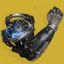
雷霆一击与落雷的击杀最多返还 50%近战技能能量。
使用雷霆一击时：按帧率额外返还近战技能能量。
帧率对应：30 帧 = 10%｜60 帧 = 18%｜120 帧 = 32%｜144 帧 = 41%｜300 帧 ≈ 77%
雷霆一击起手与放电时：
以落雷击中 15 米内的战斗人员，造成 181[50] 点电弧伤害并施加震颤。
同时立刻触发一次震颤连锁伤害。
处于增幅时落雷伤害提高 100%（360[100?]）。
把雷霆一击充满可让落雷伤害再提高至多 200%。
与增幅的加成叠乘，合计 1080[?] 点落雷伤害。
一次充满的雷霆一击造成 2365 伤害。
处于增幅时，单次最高 3085 伤害。
强度取决于帧数，只推荐 300 以上的玩家使用（使用雷霆一击时：按帧率额外返还近战技能能量。帧率对应：30 帧 = 10%｜60 帧 = 18%｜120 帧 = 32%｜144 帧 = 41%｜300 帧 ≈ 77%）
喷气背包燃料：被动每秒充能 3.5%。
武器击杀提供 20% 燃料。
电弧充能近战击杀提供 50% 燃料。
燃料充满后，在空中按［空中移动］启动喷气背包。
每次使用后燃料一律清空。
启动喷气背包时｜在 6 米内造成最高 168[69] 点电弧伤害，并施加疲惫。
喷气背包时长取决于［空中移动］是轻按还是长按。
轻按：1.5 秒内飞行 30 米。
长按：3 秒内飞行 50 米。
疲惫使战斗人员的输出降低 25%。
飞行中撞上战斗人员会触发英勇肩撞，造成 1509[?] 点电弧伤害，在 ? 米内致盲，并提供 +40 近战属性，持续 7 秒。
英勇肩撞吃近战增伤。
跑图英勇礼服无法继承先前的速度挺可惜，不过可以补足剩下不够的距离，电弧导体故我在的玩法非常有趣。英勇礼服的撞击是近战，能吃到堡垒重击等增伤
复活盟友或被复活时：
张开一片 15 米的场域，持续 10 秒，为自己与盟友提供护盾加持。
盟友离开范围会暂时失去护盾加持。
护盾加持：
100 点覆盖护盾。
护盾加持存在期间，2 秒未受伤害后开始回充，1 秒回满。
覆盖护盾被打破后护盾加持移除，且无法再获得。
穿戴者的覆盖护盾被打破时，盟友身上的护盾加持一并移除。
用与超能同元素的武器击杀时：
为自己与 15 米内的盟友提供 1 层恢复，持续 3+1.5 秒。
两次触发之间有 3 秒冷却，界面上以「治疗」增益显示。
清怪对应大招属性武器击杀可以为自己与盟友提供短暂的恢复 1，朴实优秀的效果，可用作机制金装；棱镜可用职业金版本
把燃烧锻锤改为一次性的砸击：伤害提高 650%，释放 3 道追踪波形，但不再按持续型超能计算超能技能生成。
波形施加 20+40 层灼烧，命中处生成一道旋风。
燃烧锻锤的旋风每 0.2 秒造成 19[16] 伤害，每 0.56 秒施加 ?+? 层灼烧，持续 7.5 秒，并追踪战斗人员。
多道旋风的伤害现在可以重叠。
神圣献祭第二段砸击的中间那道波形会生成一道旋风，每 0.2 秒造成 7[3] 伤害，每 0.56 秒施加 3+2 层灼烧。
泰坦少见的脱手大金装，但是脱手大锤的伤害跟不上如今的数值膨胀了，连火泰坦都基本不会使用它
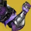
额外提供一次圣盾投掷近战技能充能。
哨兵圣盾的圣盾投掷施加虚弱 10 秒。
强化后的圣盾投掷：
变为可穿盾，命中施加虚弱 10 秒。
眩晕屏障勇士提供一次近战技能充能。
圣盾投掷的击杀生成一枚虚空裂口，不受冷却限制。
拾取虚空裂口时：
提供 11.25% 圣盾投掷近战技能能量。
泰坦单人的输出金装，存在 bug 在超凡状态下的近战无法施加易伤，需要依靠切换职业技能退出超凡形态，普通玩家一般不会用到
圣盾投掷产出的虚空裂口不存在 CD，可以配合冰冷伺候使用，反屏障效果与虚荣自负一样会受压光影响，-50 光需要两盾才能破
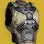
用充能近战击杀或使用终结技时：
战斗人员触发一次动能爆炸，在大范围内造成随距离衰减的伤害，把战斗人员向上击飞并使其迷失方向。
衰减最多降低 20% 伤害。
爆炸伤害与半径随战斗人员档位变化（括号内为终结技触发）。
两次非连锁爆炸之间有 1 秒冷却。
爆炸伤害｜半径：
：439（598）点动能伤害，15 米。
：598（717）点动能伤害，20 米。
及以上：717 点动能伤害，20 米。
由充能近战击杀触发的爆炸可以连锁，连锁出的爆炸较弱，在 8 米半径内最高只造成 242[?] 伤害。
连锁爆炸没有冷却，但不能同时触发多次。
断绝末路高难乏力，低难又有些小题大作，中等难度的压光环境是他的舒适区
被动提供 +100 防御抗性与 +100 防御持久。
格挡期间：
50%[10%] 伤害抗性。
格挡下一次命中提供 2 层完美格挡，最多 100 层。
身上有任何恢复效果时无法累积层数。
10 秒未格挡任何命中会清掉全部完美格挡层数。
持有完美格挡层数时造成刀剑伤害：
提供 2 层恢复，时长随层数变化。
1 层时 2 层恢复持续 4[3] 秒，100 层时最长 16+8[6+3] 秒。
据点式格挡：
刀剑格挡改为提供 ?%[68%] 伤害抗性。
使用威能弹药刀剑时，格挡伤害与持续举盾都不再消耗刀剑能量。
高难吃到光剑红利的金装，泰坦的任何分支搭配圣贤 2 据点都能在高难本有一战之力，建议使用棱镜/缚丝/虚空分支
15 米内有 3 名战斗人员时：
获得生物强化。
条件不满足后再保留 5 秒。
生物强化：
超能伤害提高 50%。
近战伤害提高 165%[100%]。
+35? 操控性，+35 填装速度。
高难冰泰坦专用金装，搭配贪婪 4 成为三职业高难速通天花板的存在
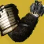
用坚不可摧或哨兵圣盾格挡期间：
移动速度提高 15%。
超能结束后把格挡掉的伤害转成超能能量，最多 50%。
坚不可摧结束时最多提供 60%手雷技能能量。
从 15% 起算，把坚不可摧的格挡量吃满后为 60%。
坚不可摧自身的回转已经足够，哨兵圣盾举盾也有毁灭之牙这种更优秀的选择
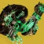
额外提供一次狂暴利刃近战技能充能。
狂暴利刃或镖弹风暴命中时：
获得 1 层神龙利爪，持续 2.75 秒，最多 3 层。
每次施放技能只提供 1 层。
神龙利爪：
镖弹风暴与狂暴利刃伤害提高 25%｜60%｜120%。
战争旗帜的脉冲按 10 米内每名盟友提供 5% 狂暴利刃近战技能能量，穿戴者本人也算一名。
在有搏击手词条时他也很好玩，常态回转和伤害都成问题
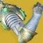
用近战、偃月近战或终结技击杀时：
获得 1 层燃烧之拳，最多 5 层，每层提高近战与武器伤害。
到时只掉 1 层，不是全部清空。
获得一层后 2 秒，该层的计时才开始走。
燃烧之拳：
1 层 = 近战伤害 +80%，持续 9.5 秒。
2 层 = 近战伤害 +160%，武器伤害 +20%，持续 10 秒。
3 层 = 近战伤害 +240%，武器伤害 +25%[20%]，持续 4 秒。
4 层 = 近战伤害 +320%，武器伤害 +30%[25%]，持续 4 秒。
5 层 = 近战伤害 +400%，武器伤害 +35%[25%]，持续 3 秒。
清怪维王者（任意偃月）+NPA+梦根 2（压制偃月产球）搭配电/棱镜/虚空分支是非常优秀的机制金装；火小锤+（地窖 2+灭火 2/se2）/（涅索斯 4）+神器风寒冰粪坑的组合即使在宗师也有一战之力
输出虫手小锤是目前唯一拥有优秀 DPS 的近战技能输出，对熟悉游戏的玩家而言是非常顶级的单人输出手段
高难虫手好耶/虫手偃月好耶/火小锤+神器风寒冰粪坑在有叠层环境的宗师中拥有不错的表现
施放超能时，为自己与 ? 米内的盟友：
完全回满生命值、手雷、近战与职业技能能量。
超能结束时：
8 秒内每秒提供固定 66% 的手雷与近战技能能量。
输出尽管有黏附冲击神器对黏雷的加持，但是常规 DPS 比一些顶级的输出武器选择略逊一筹，目前唯一的使用场景是电术 solo 大师看护人
被动提供 +30 空中效率，并强化瞬移。
在虚空或棱镜分支职业上装备瞬移时：
每 6[8] 秒提供一次免费的水平暗影瞬移，用［空中移动］触发。
暗影瞬移释放 4[2] 枚追踪弹，机制与新星折跃的相同，随超能伤害缩放。
瞬移距离增加 25%。
瞬移充能冷却降低 20%（两次充能均由 3.55 秒降到 2.85 秒）。
两次瞬移之间的间隔降低 30%（1.65 秒 → 1.15 秒）。
使用瞬移或暗影瞬移时：
对 10 米内的战斗人员施加不稳定。
获得不稳定弹药，持续 9[5] 秒。
+100 操控性，持续 2 秒；收枪即取消该效果。
雷达保持可见。
处于新星折跃超能期间：
暗影瞬移不消耗超能能量。
提供的虚空虚弱伊卡洛斯和瞬移不稳定非常完美地契合了石板的邪恶收割和不稳定神枪手，建议搭配速度指挥/土味涡流故我在/杀手之牙/裂波者等强力虚空武器，频繁使用俯冲召唤线虫施加切割获取织造铠甲，搭配面面俱到等也可以快速回转大招，是非常有趣的技能流金装，唯一的缺点是要适应瞬移的手感
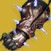
被严冬之怒冻结的战斗人员受到的碎裂伤害提高 150%。
严冬之怒右键包含占大部分伤害的直击和小部分碎裂伤害，总体伤害相当于提升大约20%
使用严冬之怒的碎裂攻击时：
30? 米内的盟友获得 4 层冰影武器激涌（持续 15[6] 秒）与满层冰霜护甲。
每名受益的盟友返还 ?%超能能量。
该增益可刷新，返还似乎每名盟友只算一次。
装备冰霜脉冲星相时施放裂痕：
自己与 ? 米内的盟友获得 2 层冰影武器激涌（持续 11[6] 秒）与满层冰霜护甲。
每名通过冰霜脉冲获得冰霜护甲的盟友提供 2%超能能量。
严冬之怒结束时：
为自己提供满层冰霜护甲。
高难巴利道斯对大招的实际增伤只有 20%，冰霜脉冲自身也带 5 层冰霜护甲，对个人的作用极其有限，不应该在单人活动中使用。最大的价值是在多人场景下给予队友冰霜护甲的辅助（注：冰大右键碎冰有大头的右键伤害和小头的右键碎冰伤害，150% 碎裂伤害是指提升小头的碎冰伤害）
被动为流明提供 +30 空中效率。高贵追踪弹会为流明补充高尚弹药。
站在裂痕或光焰之井里时：
按小队人数生成高贵追踪弹，平均每人每 8 秒一枚。
高贵追踪弹：
追踪 40 米内的盟友，靠近即施加增益。
优先找最近 8 秒内没被治疗过的盟友，同一名盟友每 4 秒最多命中一次。
治愈裂痕｜追踪弹回复 70 点生命值、60 点护盾，并开始回复生命值。
强能裂痕｜追踪弹提供 35%[15%] 增伤与 +100 职业属性，持续 5 秒。
用追踪弹为盟友上增益时按小队人数提供职业技能能量。
2 人 = ?%｜3 人 = 25?%｜4 人 = ?%｜5 人 = ?%
输出辅助术士最重要的团本辅助金装，提供 35% 的焕光系增伤，几乎所有的队伍中都需要一个汇编器的角色
清怪给予的奶阵回转和大范围队友支援相当优秀
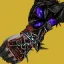
虚空之魂持续时间延长 55%，10 秒后伤害最高提高 30%，并可通过交互收回。
收回后获得「虚空之魂待用」25 秒，期间可重新放置。
虚空之魂击杀时：
提高虚空之魂伤害并提供伤害抗性。
重新放置可保留已累积的加成。
虚空之魂加成：
伤害 +25%｜+50%｜+75%｜+100%。
伤害抗性 12.5%｜25%｜37.5%｜50%。
旧神之子增加压制的最大受益者，除了以外的怪只要被旧神之子拴住基本上失去了作战能力，非常优质的控场，个人比较推荐使用强能阵版本的吸血，强能阵本身也会给可观的三技能回转和额外弹药效率，与邪恶收割相性很好
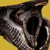
追踪步枪每 0.7 秒补充 4% 弹匣，收枪状态下同样生效。
? 秒内用追踪步枪对、勇士、或载具命中 5 次：
该战斗人员被标记 10 秒。
后续命中刷新标记时长。
被标记的战斗人员被盟友击杀时：
为盟友生成威能弹药。
为穿戴者生成特殊弹药。
纪念碑面具的弹药块提供总备弹的 10%，并受回收器模组影响。
输出辅助在批发弹药的今天，墓碑头的的主要作用不再是为队友产子弹，而是保证神性圈不断，但随着神性使用率降低出场机会也变少了
用动能武器击杀时：
战斗人员爆炸，元素与所装备的超能一致，并施加对应元素的减益。
获得 1 层晶体三极管，持续 11 秒，最多 2 层。
到时只掉 1 层，不是全部清空。
元素爆炸：
造成最高 252[100] 点元素伤害，并按所装备的超能施加对应减益。
半径随晶体三极管层数变化。
基础 = 4 米｜1 层 = 6 米｜2 层或动能精准击杀 = 8 米。
电弧：致盲 ?[1] 秒。
烈日：15+5 层灼烧。
虚空：虚弱 4 秒。
冰影：30 层减速，持续 7+1 秒。
缚丝：割裂 6+2 秒。
虽然增强后不需要精准击杀触发，爆炸范围还是不够理想，缚丝切割可以联动神器崩解，虚空虚弱可以联动神器邪恶收割
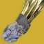
额外提供一次近战技能充能。
被动附带一份回天掌法的效果。
多一层近战和产球，仅此而已
超量充能的手雷施加虚弱 6?[2.5?] 秒。
用混沌加速为虚空手雷超量充能期间：
获得 20% 伤害抗性。
造成超量充能虚空手雷伤害时：
触发混沌交换，持续 1.75 秒。
混沌交换提高基础手雷回复速率。
量子光束：额外 +5000%[4000%]。
散射手雷：额外 +3700%[2700%]。
涡流手雷：额外 +3400%[2400%]。
手持超新星：额外 +2500%?[2000%]。
两次触发之间有 4 秒冷却，使用手雷即清除该冷却。
反转之握的强度一般，必须依靠武器承担大半伤害，散射雷出伤快、伤害适中、回能量适中；涡流雷出伤很慢、伤害较低、但是因为在有一定血量的战斗人员环境可以触发两次回雷，技能经济是比较优秀的，而且不能小觑涡流雷聚怪给与的控场生存能力，也适合配合区域拒止混乱无序等爆炸武器出伤；手持超新星有最高伤害，但是回复的技能能量很少，而且要承担贴脸的风险；量子雷对单伤害最低，但是清怪还不错。
至少装备 1 项电弧技能时：
用电弧技能击杀，或造成震颤击杀：
获得 1 层传导叉齿，持续 10[4] 秒，最多 3 层。
全部层数同时消失。两次叠层之间冷却极短。
传导叉齿：
基础手雷、近战与超能回复速率额外 +168%｜335%｜503%。
雷霆万钧的被动超能流失降低 22%｜44%｜65%。
放置离子哨兵会在其位置触发一枚风暴手雷。
割草优秀的电术割草配装。给予的电弧技能回转、离子哨兵附赠的风暴雷、增加雷霆万钧的使用时间都很舒服
黎明的射弹命中即触发点燃。
灼烧每跳提供 5?%近战技能能量。
点燃伤害提高 100%。
每有一名战斗人员被点燃命中就提供 40%近战技能能量。
烈日爆发（猎人日志）把提供的近战能量翻倍，其自身伤害也翻倍。
输出黎明副歌可以翻倍所有点燃的伤害（光剑除外），这使得点燃占伤害一部分的武器得到了显著的伤害提升，最典型的比如千语、狼毒、纯五度故我在，多人情况下仍然需要确保队伍中已经有汇编腿的情况下使用。分离老二的最优解，无限点燃可以轻松拿下锁具
高难翻倍点燃伤害、依据点燃、灼烧提供可观的近战技能回转，神器烈日爆发实际上隐性的第二次点燃会提供翻倍的技能能量从而实现接近无限响指，常见的玩法有火术蝎狮、棱镜纯五度故我在。对大招黎明的增强只是附赠品
装备缚丝超能技能时：
施放裂痕会对 6 米内的战斗人员施加悬停。
自己施加的悬停被强化。
击杀处于悬停的战斗人员回复 15 点生命值。
恶意抓握：
处于悬停的战斗人员每 0.467[0.3] 秒受到一次递增的动能伤害。
每次强化悬停的持续伤害生效都回复 5 点生命值。
伤害从 23[9] 起算，平均每跳递增约 5.5%[?%]——悬停越久，伤害越高。
悬停到时的那一刻再造成 64[34?] 伤害。
对一名合计约 380 点动能伤害，带持续丝线可到约 550。
由施放裂痕触发的恶意抓握伤害提高 112.5%，上面的数值未计入这一项。
要求裂痕回转，如果悬吊的战斗人员不够多回血量也不够可观，并没有解决缚丝术缺少软减的问题，棱镜有更多优秀的金装选择。悬吊 dot 伤害有夸张的超能回转效率，然而缚丝脱手大也比较幽默，如果他能和虚荣自负合二为一将是设计优秀的金装
地狱火的射弹飞行 17 米后伤害提高 20%。
地狱火的射弹在空中飞行 1 秒后释放 4 枚弹片。
弹片造成 18[?] 点烈日伤害，并施加 5+0 层灼烧。
弹片带追踪。
仁心用于远程刮痧点燃还不错，但是现在黎明副歌是他的全方面上位
被动提供基础手雷、近战与职业技能回复速率额外 +45%，以及 +15 空中效率。
把生命值低于 50% 的战斗人员描上红色轮廓。
把超能已充满的敌方描上黄色轮廓。
隐形的战斗人员只要生命值低于 50% 或超能已充满，同样会被描边。
PVP
离子轨迹移动速度提高 66%，并提供更多技能能量。
每道离子轨迹提供的技能能量合计：
手雷 25%｜近战 25%｜职业技能 30%
拾取离子轨迹时：
15 米内的盟友获得 10% 的手雷、近战与职业技能能量。
割草搭配光耀 4 回转技能非常解压，贪婪 4 由于是加算在技能回转和辅助队友层面略逊一筹
充能近战伤害施加常规虚弱 6 秒。
对抓钩近战与烈焰之歌不生效。
用充能近战击杀或使用终结技时：
以战斗人员死亡位置为中心触发一次强力虚弱爆发，使其迷失方向并提高受到的伤害 30%，时长随档位变化。
爆发的时长与范围取决于战斗人员档位（括号内为终结技触发）。
屏幕会黑掉 7.5 秒，随减益走向 15 秒时长而逐渐恢复清晰，界面不消失。
领主之末：
：15（20）米半径内施加减益 10（15）秒。
：20（25）米半径内施加减益 15（20）秒。
及以上：25（25）米半径内施加减益 20（20）秒。
长时间易伤邪冬头板凳终结技能够实现远距离上长时间易伤，搭配一些续易伤手段经常出现在 lowman 环境。
输出邪冬头的输出案例是非常优秀的伤害选择，利用邪冬头的近战上易伤机制续上推推的 30 易伤，火歌星界之火的原理用堡垒的 300% 增伤雪上代替，让推推位在给予队友焕光和生存能力的同时打出与队友相同甚至更高的输出，输出过程仍然有很多细节需要注意，适合多人环境下不方便叠层的情况使用
持有至少 5 层电光充能时，冲刺 1.5 秒并保持冲刺：
每 0.33 秒获得 1 层电光充能。
拾取离子轨迹时：
+4% 混沌之触超能能量。
混沌之触命中提供 10%超能能量。
两次触发之间有 0.75 秒冷却。
混沌之触的总伤害因此最高提高 120%。
优秀的电术输出大招，可以依靠击杀快速回转大招，在分离老二能够一穿四锁具，但黎明副歌无限点燃的打法更轻松简单
电弧之魂命中提供 5%手雷技能能量，每轮点射最多一次。
处于吞食期间命中不再提供手雷能量。
装备电弧手雷技能时：
长按［手雷］召出一只电弧之魂，持续 20 秒，并获得增幅。
电弧之魂存在期间，裂痕把它的时长刷新到 20 秒，而不是 15 秒。
输出逃逸手是术士最万金油的顶级金装，电炮台搭配上火炮台和线虫不依靠武器就能提供不俗的伤害，是在进行单人内容或者队伍中已经有火中术士后的不二之选
清怪逃逸手的星象选择多样，通常以火炮台线虫的的拉满伤害和冰炮台吞噬的控场生存为代表，前者需要支配的吃球回雷或者预言 4 补足手雷回转。各个炮台的协助清怪能力非常强，常驻增幅也是加分项，几乎不用考虑生存问题
高难正如前文所言，逃逸手是非常优秀的枪架子，技能占了伤害的一半，几乎适配任何武器选择，作为术士高难最顶级的选择之一
用近战击杀时：
3 层治愈与 1 层恢复，持续 8+4 秒。
使用终结技时：
3 层治愈与 2 层恢复，持续 8+4 秒。
机制生存吸血手在近战/终结技击杀后给予长达 8 秒的恢复 1/恢复 2 提供的生存能力非常夸张，对除棱镜以外的分支来说是非常优秀的走机制金装，常与偃月配合使用
自己与盟友站在穿戴者施放的裂痕或光焰之井上时：
+100 填装速度，填装时长倍率 0.9×。
强能裂痕与光焰之井提供 100%[50%] 的伤害衰减距离加成。
换下这件异域后效果仍会保留。
主要武器腰射期间：
+5 射程、+30 稳定性，
精度锥范围 −30%、精准判定角度 +2?°，
瞄准辅助与伤害衰减距离 +20%。
死者传说、遗言与汤米的火柴盒不吃衰减加成，精度数值另有调整。
输出月鞋火中是“释放时判定”的效果，所以可以在放完火中后切到汇编腿仍然保留月鞋的效果，但是考虑到收益大部分玩家不会愿意增加自己的操作复杂度，月鞋如今鲜有出场了
神秘织针变为可穿盾。
用神秘织针命中战斗人员会打上一个菱形标记，持续 10 秒。
用神秘织针击杀，或击杀处于悬停的战斗人员时提供近战技能能量。
T1 = 15%｜T2 = 22.2%｜T3 = 33%｜T4 = 100%｜ = 33%
被标记的战斗人员死亡时：
目标触发一次悬停爆发。
造成 269[40] 点缚丝近战技能伤害，并对 6 米内的战斗人员施加悬停。
对被标记的战斗人员再命中 2 次神秘织针：
目标触发一次更强的悬停爆炸。
造成 538[?] 点缚丝近战技能伤害，并对 10 米内的战斗人员施加悬停。
对同一名战斗人员命中 5 次织针风暴：
目标触发一次范围更大、伤害更高的悬停爆炸。
造成 5040[?] 点缚丝超能技能伤害，并对 10 米内的战斗人员施加悬停。
把虚荣自负放在这个位置完全是因为他给织针风暴的增幅，搭配进化丝线和集群战术是伤害最高的一批脱手大，虽然有血红炼金术之争，但是最优解是二者结合：放完大后切到血红炼金术。缚丝术上升丝线搭配双增伤光芒复仇是游戏内的最顶级 DPS 之一，有些操作门槛，会在一些追求极限 DPS 的场合出现
虚荣自负在高难环境下强度一般，由于他的反屏障效果并不是机制反屏障，所以受压光影响严重。在 50 光环境下需要三枚织针才能打破屏障；他的最大作用是击杀标记战斗人员释放悬吊，标记需要近战回转，这意味着必须绑定棱镜超凡。在面对时相当于白板金装
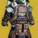
用与超能同元素的武器击杀，或每 3 秒内连续造成 5 次同元素武器伤害（每秒最多计一次）：
触发能量虹吸，额外提供超能能量，每 ? 秒最多一次。
超能已充满时，能量虹吸提供 4 层与超能同元素的武器激涌，持续 11[6] 秒。
超能已充满时，烈日超能上的能量虹吸有时会触发失败。
按击杀：T1 = 1.5%｜T2 = 2%｜T3 = ?%｜T4 = 2.5%｜ = 2.5?%
按伤害：?%超能能量
超能技能结束时：
4 层电弧、烈日、虚空、冰影与缚丝武器激涌，持续 10 秒。
获得和谐弹药，持续 15 秒。
和谐弹药：
造成与超能同元素的武器伤害时，在目标身上触发一次同元素爆炸。
引爆在 6 米内造成最高 180[?] 伤害，最低衰减到 50%。
每秒最多引爆一次。和谐弹药的击杀会触发能量虹吸。
割草、大招回转和谐护肩搭配元素超充器、苍白之心原始特性，铁旗 4 套装等等可以快速回转大招，给予除动能外全属性激涌还不错，就是时间略短了；谐振军火的伤害是个添头，无法吃到任何增伤。
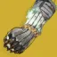
被动为忧愁武器提供 +30 空中效率。
近战命中施加强效腐化。
被腐化的战斗人员死亡时在 5 米半径内扩散强效腐化。
强效腐化每 0.52[0.7] 秒跳一次伤害，10[?] 秒内最多 19[?] 跳，每跳造成 32[5?] 点动能伤害，整段合计 1366[?] 伤害。
强效腐化的每一跳伤害都比上一跳高：前 14 跳每跳递增 11%，最后 5 跳平均每跳递增 41%。
重新施加强效腐化会把递增重置。
经常搭配忧愁系列武器使用，与库尔之影的联动令人影响深刻，枯骨鳞片和荆棘清怪手感也还不错
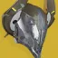
用虚空伤害击杀提供深海萃取，每次 2.5 秒，最长 20 秒。
灵魂虹吸的击杀，以及用虚空伤害击杀处于压制的战斗人员，把深海萃取延长 1.5 秒。
灵魂虹吸命中施加压制 10[5] 秒。
深海萃取生效期间：
基础手雷与近战回复速率额外 +300%。
基础职业技能与超能回复速率额外 +200%。
割草优秀的虚空术士割草金装，建议与灵魂虹吸、旧神之子、强能阵搭配
额外提供一次散射手雷技能充能。
散射手雷的子弹药追踪与速度大幅提升。
散射手雷的击杀生成 3 枚额外的散射子弹药。
额外的子弹药无法再引发爆炸。
非必要的虚弱让虚无镣铐从极其解压的割草金装，沦落为只能清理几只怪的、有回转问题的金装
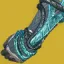
被动提供 +35 操控性、+35 填装速度与 +10 空中效率。
PVP
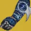
额外提供一次急冻手雷技能充能。
强化急冻手雷：
追踪更强。
飞行距离与速度提高 17.5%。
造成伤害时提供手雷技能能量。
急冻手雷提供的手雷技能能量：
T1 = 10%｜T2 = 22%｜T3 = 34%｜T4 = 50%｜ = 7%
锇素手搭配冰焰飞弹展现出了极其强大的控场能力，但是极其缺少伤害输出，依赖武器
超能为光焰之井、站在自己的光焰之井内、且超能能量低于 50% 时：
每次击杀提供 10%超能能量。
每连续一次击杀，提供量递减 1.5%，最低每次 4%。
10% → 8.5% → 7% → 5.5% → 4% → 4%……
能与铁旗 4、苍白之心、元素超充器等搭配实现无限火中
装备烈日超能技能时：
武器击杀按战斗人员档位提供职业技能能量。
T1 = 18%｜T2 = 26%｜T3 = 40%｜T4 = 60%｜ = 80%｜ = 100%
= 30%
站在裂痕里用武器击杀时：
治愈裂痕｜为自己与 10 米内的盟友提供焕光，持续 6.5 秒。
强能裂痕｜为自己与 10 米内的盟友提供 1 层治愈。
光焰之井与黎明的击杀为自己与 10 米内的盟友提供焕光与 2 层治愈。
看起来很酷的机制却华而不实，汇编腿是他的全方面上位还不需要击杀
被动为融合步枪与线性融合步枪提供 +30 空中效率。
融合步枪与线性融合步枪的击杀提供焕光，持续 7.5+3.75 秒。
空中移动补满全部武器。
空中移动包括伊卡洛斯突进与编织微步。
现在基本不会使用火焰润羽三切猴戏输出了；可以抱着 vex 揭秘者清怪
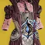
强化凄凉观察者：
索敌距离提高到 50 米。
在生成位置的斜对角生成 4 块中型冰影水晶。
凄凉观察者散出一片覆盖 6 米的冰影风暴。
那 4 块冰影水晶 15 秒后重新生成。
冰影水晶按超能技能伤害计算。
站在冰影风暴里时：
每秒获得 1 层冰锥，最多 5 层。
开火即触发冰锥攻击，释放一枚冰影射弹，造成 50[?] 点冰影伤害，并施加 50[20] 层减速，持续 ?+? 秒。
冰锥每 0.2 秒可发射一次。
离开冰影风暴后冰锥再保留 2 秒。
高难霜袍是对于冰术而言最好的金装，可用集体爆破骑士之火释放大量炮台，也有靠混乱无序出伤的打法，使用预言套则要搭配死亡信使，涅索斯是更为保守稳妥的选择，更推荐冰霜脉冲星象回转裂痕，冰川收获在冰分支改版后并不是必须的选择
处在裂痕或光焰之井里时：
4 层与超能同元素的武器激涌。
对战斗人员造成伤害会打上标记，持续 5 秒。
被标记的战斗人员受到自己的伤害提高 10%。
击杀提供真血之法，每次 5 秒，最长 15 秒。
真血之法生效期间，裂痕的计时暂停。
光焰之井不会被真血之法延长。
战斗中临时换上血红炼金术，其全部效果会失效 10 秒。
该 10% 对自己造成的所有伤害生效，不限于武器。
输出站在裂痕中血红炼金术不仅会给予对应大招属性的 4 层激涌，还有最主要的对标记目标造成所有伤害的 10% 额外乘区，可以依此实现不同属性武器双/三切输出；让回旋喝彩这种双属性武器吃满激涌；如果属性对应则可以带满武器洗礼而不是激涌，单人 solo/队伍中已经有汇编腿术士时适合使用
装备虚空超能技能时，只对自己生效：
站在自己创造的强能裂痕上提供吞食，持续 11+0 秒。
离开同一个强能裂痕再进去会刷新吞食的时长。
割线纤维的吞食最多刷新到 11+11 秒。
吞食生效期间：
击杀提供 10%职业技能能量。
不再提供过载射击——破盾功能如今已是固有 Perk 自带的一部分。
绑定虚空大招，而吞噬对于虚空分支通过碎片就可以随意取得，击杀回转职业技能作用有限。棱镜不如选择他的纯上位职业金版本
新星炸弹期间大幅提高伤害抗性。
从 99.5% 起步，到接近结束时骤降到 75%。
施放新星炸弹时：
获得 5 秒内施放「新星炸弹：长矛」的能力。
新星长矛在 8 米内造成最高 2269[?] 伤害，对最高 2950 伤害。
用长矛打碎新星灾变会在灾变追踪弹之外再触发一道新星涡流。
新星涡流与超能版机制相同。
触发至少需要 20 米距离。
单次施放新星炸弹对最高约 14500 伤害。
新星炸弹的击杀返还 5?%超能能量，最多 50%。
处于吞食期间用武器击杀时：
按战斗人员档位额外提供超能能量。
T1 = ?%｜T2 = ?%｜T3 = ?%｜T4 = ?%｜ = ?%
实际数值随档位变化，对任何超能技能都生效。
矛的释放需要合适的时机，判定没有那么严格，吃满伤害与猎人金枪同水平，比六层噬星略高，但是由于需要两次大招释放动画而且容易遮挡队友视野很少有使用场景。搭配铁旗 4 砸怪堆可以快速回转大招
治愈手雷的恢复球替换为恢复炮台。
消耗治愈手雷会在身前生成一座恢复炮台。
恢复炮台：
存在 9 秒，构造体生命值 100?。
每 3 秒向自己与 30 米内的盟友放出治疗追踪弹。
治疗追踪弹在 7.5 米半径内提供 1 层治愈与 1 层恢复，持续 4+2[3+1.5] 秒。
装备火焰之触时，只对穿戴者本人：治愈与恢复提高到 2 层。
为受伤的盟友回复生命值 1 次[6 次]后：
在该盟友位置生成一枚能量球，提供 2.5%超能能量。
两枚能量球之间有 10 秒冷却。
彪悍高难先知头不再追踪满血友军后变得非常难用，回转也存在问题，但是却完美适配了彪悍环境
额外提供一次融合手雷技能充能。
被动提供基础融合手雷回复速率额外 +20%。
处于焕光，或站在光焰之井、强能裂痕里时：
武器每命中提供 5% 融合手雷手雷技能能量，每 0.4 秒最多一次。
武器击杀提供 15% 融合手雷手雷技能能量。
用融合手雷击杀时：
提供 100%职业技能能量。
跑图用的最多的是超级跳触发两次炽热升腾；正常使用可以搭配预言 4、黏附冲击等等，不依靠击杀回转的手雷能量不太够看
为站在穿戴者创造的裂痕里的提供 25%[5%] 伤害抗性（抗性 2 层）。
裂痕与光焰之井重叠或位于其中时，站在裂痕上仍能吃到该抗性。
进入重伤时：
逝者留痕提供 50%[25%]职业技能能量。
该增益一直持续到脱离重伤为止，实际起到冷却的作用。
死亡时：
生成一个治愈裂痕，持续 15 秒。
搭配纯火属性分支圣贤 2 光剑不错，其他搭配裂痕回转存在问题
施放超能时：
获得增幅，持续 15 秒。
装备雷霆万钧超能技能时：
雷霆万钧的命中与击杀提供 1 层晋升振幅，最多 30 层。
雷霆万钧的离子瞬移超能消耗降低 50%，降到 3.125%。
晋升振幅：
每层提高雷霆万钧伤害 6.7?%，30 层时 +200%。
按击杀数最多返还 30% 的风暴舞者超能能量。
处于增幅期间：
电弧技能命中提供 1 层电光充能，每 0.6 秒最多一次。
输出作为变身系电大招在对群的同时还拥有优秀 DPS，搭配 NPA 雷霆反击传导宇宙织针、（勇气琢面）使用，最典型的例子是输出晚星老二
高难光剑搭配圣贤王冠让电术和棱镜术都能搭配风暴舞者之拥有不错的体验
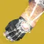
名为「烈日手雷」的那种烈日手雷固有附带快速球，持续时间延长 2 秒。
充能近战击杀提供 5 秒的炎阳护腕待用。
炎阳护腕待用期间使用手雷技能：
获得炎阳护腕增益，持续 4 秒。
炎阳护腕使「烈日手雷」的基础回复速率额外 +20000%。
技能回转改动的受害者之一，一次只能转 4 颗雷，割草还是不错的
打破缠结时：
生成 2 只线虫。
线虫命中施加瓦解。
无意义的线虫上拆解和十秒一次的缠结产线虫，几乎没有任何作用
冲刺 1.5 秒后：
把手中武器的弹匣补满 100%／把热量清空 100%。
冲刺速度由 8 米/秒 提高到 8.5 米/秒。
滑铲距离由 6.5 米 提高到 8.5 米。
蹲行速度不会低于 4 米/秒。
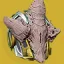
用与手雷同元素的武器击杀时：
获得 1 层死亡阵痛，最多 5 层，每层提高手雷技能伤害并每秒额外提供手雷技能能量。
到时只掉 1 层，不是全部清空。
获得一层后 2 秒，该层的计时才开始走。
死亡阵痛：
1 层｜手雷伤害 +40%[20%]，抓钩近战伤害 +?%，每秒额外 +0.5% 手雷能量，持续 8 秒。
2 层｜手雷伤害 +55%[40%]，抓钩近战伤害 +?%，每秒额外 +1% 手雷能量，持续 7 秒。
3 层｜手雷伤害 +70%[60%]，抓钩近战伤害 +?%，每秒额外 +1.5% 手雷能量，持续 6 秒。
4 层｜手雷伤害 +85%[80%]，抓钩近战伤害 +?%，每秒额外 +2% 手雷能量，持续 5 秒。
5 层｜手雷伤害 +100%，抓钩近战伤害 +170%，每秒额外 +2.5% 手雷能量，持续 4 秒。
死亡阵痛生效期间使用手雷技能，持续 5 秒：
20 米内的盟友获得「感受烈焰」。
「感受烈焰」使手雷回复速度 ×10。
输出真理之容在输出上的典型且唯一的例子是电浆雷骑士之火 solo 大师看护人
割草除了提升手雷伤害，真理之容还可以提升被视为手雷的炮台伤害，电术搭配骑士之火的玩法依旧不错
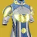
15 米内至少有 3 名战斗人员时：
基础职业技能回复速率额外提高，随人数递增。
3 名 = +250%｜4 名 = +666%｜5 名 = +1085%｜6 名 = +1500%
放置裂痕 1 秒后：
触发一道电弧冲击波，在 7.5 米内造成 360[100] 点电弧伤害并打断动作。
之后每 5 秒再触发一道，直到裂痕消失。
被冲击波击杀的战斗人员会爆炸，造成 180[100?] 点电弧伤害。
装备电弧超能技能时，爆炸与冲击波附带致盲。
高难辐径晚星搭配贪婪 4 给予的致盲和奶阵回转是电术少数可以在高难生存下来的选择，与药剂师神器很搭配
装备烈日超能技能时：
在空中机瞄即获得晨星圣典。
被动在空中提供 +50 空中效率。
晨星圣典：
把自己定在空中 2.8 秒。
战斗人员瞄准穿戴者的精度下降。
期间继续命中可延长 +? 秒，最长 ? 秒。
生效期间提供 15% 伤害抗性与 25% 受击抖动抗性。
烈日武器的击杀提供 1 层恢复（持续 ? 秒），并补满收起的武器。
在空中瞄准时会给予像增幅那样的战斗人员精度下降效果，并且每次烈日武器击杀都会重新刷新恢复 buff 到最高时间，击杀填装武器效果可搭配双增伤或弹药经济武器。
近战击杀与偃月近战击杀提供 1 层督军印记，最多 10 层。
终结技提供 3 层督军印记。
督军印记逐层衰减。终结技在动作开始时刷新层数时长。
督军印记每层提高近战伤害，持续 4.75 秒。
1 层 = +67.5%｜2 层 = +122%｜3 层 = +166%｜4 层 = +202%｜5 层 = +228%
6 层 = +249%｜7 层 = +265%｜8 层 = +278%｜9 层 = +289%｜10 层 = +300%
叠到或刷新到 10 层督军印记时：
获得一次近战技能充能。
获得「督军狂怒待用」8 秒，且无法由终结技刷新。
不去触发督军狂怒时，增益会退回督军印记 10 层。
督军狂怒待用期间使用近战或偃月近战：
近战伤害 +400%，近战动作时长 ×0.8，近战回复速度 ×38.4👀，持续 10 秒。
督军狂怒生效期间无法累积督军印记；增益结束时把督军印记清成 0 层。
输出狡诈严冬的使用需要建立在一定的游戏基础上，它代表着术士甚至是命运 2 的上限，使用火歌星界之火能够实现单人 1.7w 的 DPS 水平，如何操作可自行查询这里不再赘述，我只想强调一些误区：星界之火是纯粹的近战，无需叠加超能属性，又因为火歌会提供 100 的近战手雷职业属性，所以只需要让近战达到 100 即可，近战是不存在点燃倍率这一说法的，所以带火炮台没有任何问题；由于存在某些代码问题，只需要站在奶阵中就可以吃到护盾粉碎，注意这跟奶阵的蓝盾没有任何关系，即使蓝盾被打掉增伤依旧存在。触发护盾粉碎的方式还有神器风寒和泡泡偃月
高难在高难中基本搭配棱镜闪电激涌星象使用，每一个战斗人员都是叠层资源，需要合理利用规划，经常适用的神器有：数据盘/药剂包/石板，数据盘经常携带吞噬星象和堡垒追求极限的推图时间，但因为缺乏减伤很考验机师的操作水平；药剂包则依靠冰粪坑冰霜护甲兜底，第二个星象可随意选择；石板则依靠编织者的线虫获得织造铠甲。叠层有一些小技巧：终结技的判定时间比终结技的动画还要略长一些，在终结技的判定时间内释放的任何伤害击杀都会被视作终结技击杀，比如神器弱化波、违抗琢面、被终结战斗人员身上释放的拆解射弹，在终结技结束后秒接巴掌击杀可以再叠 3 层；目前已知的 凯旋纪念 一击制胜、27赛季 方阵爆破、回响赛季 溅射惊喜、23赛季 全能打击、18赛季 火箭之拳，在动画结束后的判定时间要更长，能够做到秒接技能和武器叠层。
永劫系异域三职业通用，效果由所选教派决定。下文的「永劫盟友」指同样装备了永劫系异域的队友。
3 秒内造成 4 次精准命中：
+30 填装速度、填装时长倍率 0.85×、+40? 操控性，持续 10 秒。
3 秒内对、或勇士造成 4 次精准命中，或眩晕一名勇士：
标记该战斗人员 30 秒，不可刷新。
被标记的战斗人员对全队高亮，受到盟友的伤害提高 20%。
该增伤与任何加成叠加。
盟友可穿墙看到被标记的战斗人员上的 X 标志。
首次标记一名战斗人员时，? 米内未使用力量学派的永劫盟友在 3 秒内每秒获得固定 33.33% 的手雷与近战技能能量。
造成 2 次精准多杀：
生成一枚能量球，为盟友提供 3.57%超能能量。
用终结技处决一名时：
为 ? 米内的盟友生成一份特殊弹药块。
用终结技处决、勇士或时：
为 ? 米内的盟友生成一份威能弹药块。
永劫弹药块提供常规弹药块拾取量的 60%，且同样有完整的浮动区间。
用终结技处决、、勇士或时：
未使用洞察学派的永劫盟友获得 ?%超能能量。
盟友死亡时：
提供 25%职业技能能量，以及对战斗人员 40% 伤害抗性，持续 15 秒。
复活盟友时：
提供 100%职业技能能量，以及对战斗人员 40% 伤害抗性，持续 10 秒。
10 米内处于重伤的盟友获得对战斗人员 25% 伤害抗性。
10 米内处于重伤、且未使用活力学派的永劫盟友每秒额外获得 15%职业技能能量。
盟友脱离重伤后，上述增益再保留 1 秒。
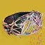
三件职业物品都能开出用充能近战击杀时：
获得虚空隐身，持续 7 秒。
使用终结技时：
获得虚空隐身，持续 10 秒。
超能充满期间拾取能量球：
获得 1 层光能盛宴，最多 6 层。
换到另一件带噬星者之灵的异域职业物品时，当前层数保留。
施放超能时：
消耗全部光能盛宴层数，超能伤害提高，持续 14 秒。
超能伤害 +18.2%｜+36.4%｜+54.6%｜+59.7%｜+64.8%｜+70%。
部分超能技能收益降低：
烈焰之歌不吃灼烧效果的伤害提升。
新星炸弹、雷霆冲击与暮光军火最高 +50% 超能伤害。
织针风暴最高 +35% 超能伤害。
使用手雷或职业技能，或造成充能近战伤害时：
为另外两项技能各提供 1 层强化技能，持续 5 秒，最多 2 层。
例：造成组合打击伤害 → 手雷与职业技能回复加快。
强化技能：
1 层 = 基础手雷与近战回复速率额外 +400%[100%]｜2 层 = +800%[200%]。
1 层 = 基础职业技能回复速率额外 +25%｜2 层 = +50%。
界面上的层数显示与实际生效的技能回复并不一致。
接上例：近战给出的强化 1 层还没到时就使用职业技能，手雷强化会升到 2 层并刷新时长，近战获得 1 层强化持续 5 秒，而职业技能那一份不会刷新——尽管界面写着强化 2 层。
15 米内有 3 名战斗人员时：
获得生物强化，持续 5 秒。
生物强化：
近战伤害提高 165%[100%]。
偃月近战伤害提高 100%。
对使用闪电激涌时效果降低。
被动提供 +35 操控性。
用与手雷同元素的武器击杀时：
获得 1 层死亡阵痛，最多 5 层，每层提高手雷技能伤害并每秒额外提供手雷技能能量。
到时只掉 1 层，不是全部清空。
获得一层后 2 秒，该层的计时才开始走。
死亡阵痛：
1 层｜手雷伤害 +40%[20%]，每秒额外 +0.5% 手雷能量，持续 8 秒。
2 层｜手雷伤害 +55%[40%]，每秒额外 +1% 手雷能量，持续 7 秒。
3 层｜手雷伤害 +70%[60%]，每秒额外 +1.5% 手雷能量，持续 6 秒。
4 层｜手雷伤害 +85%[80%]，每秒额外 +2% 手雷能量，持续 5 秒。
5 层｜手雷伤害 +100%，每秒额外 +2.5% 手雷能量，持续 4 秒。
用充能近战击杀触发点燃。
该点燃不吃近战伤害加成。
额外提供一次职业技能充能。
超能命中与击杀返还超能能量。
最多返还 50%超能能量。
丝线打击与黄金枪最多返还 30%。
五种超能技能尚未逐一实测。
使用手雷技能时：
获得织造铠甲，持续 10 秒。
处在自己暮域手雷的减速力场内时：
战斗人员造成的伤害降低 50%[20%]。
自己与盟友立即获得 1 层冰霜护甲。
之后每 0.5 秒再提供 1 层冰霜护甲。
脱离虚空隐身时：
获得不稳定弹药，持续 9[3] 秒。
被动提供 +10 稳定性与 0.?× 举枪时长倍率。
使用职业技能时：
获得幻金链甲，持续 9 秒。
填装全部武器，并拾取 15 米内的弹药块，触发填装类武器 Perk。
幻金链甲：
+35 稳定性、+? 操控性。
受到近战伤害，或打出充能近战命中时：
3 秒内的下一次近战命中获得交叉反击。
交叉反击使基础近战与电弧近战伤害提高 400%。
交叉反击的近战攻击造成电弧伤害。
对、、勇士、或造成技能伤害时：
获得 4 层与技能同元素的武器激涌，持续 16[11] 秒。
该增益不可刷新。
使用职业技能时：
获得 2 层治愈。
每 3 秒内连续击杀把计数推满 100%：
= 34%｜及以上与 = 50%
获得 1 层燃烧之魂，持续 10 秒，最多 3 层。
全部层数同时到时。重新触发燃烧之魂会刷新时长。
燃烧之魂：职业技能的治疗效果被强化，并扩散到 15? 米内的盟友：
1 层 = 3 层治愈。
2 层 = 1 层治愈加 1 层恢复，持续 3 秒。
3 层 = 2 层治愈加 1 层恢复，持续 5 秒。
若恢复已在生效，则按对应时长延长。
放置屏障时：
生成一道冰影墙，宽度相当于 5 块中型水晶，正中那块是小水晶。
屏障冷却改按巍峨屏障的?计算。
使用推进器时：
生成 2 块冰影水晶。
与异域护甲版本不同，不提供集结屏障的加成。
放置屏障或使用推进器时：
立即为自己与 12 米内视野可见的盟友回复生命值与护盾。
屏障回复 160 点生命值与 110 点护盾，推进器回复 30 点生命值。
两次治疗脉冲之间有 5 秒冷却。
治疗盟友提供 ?%职业技能能量。
用充能近战击杀或终结技击杀时：
战斗人员触发一次动能爆炸，在 ? 米内造成最高 400[?] 伤害。
非连锁爆炸之间有 1 秒冷却。
充能近战击杀触发的断绝爆炸可以连锁，连锁出的爆炸较弱，在 ? 米半径内最高造成 268[?] 伤害。
连锁爆炸没有冷却。
打出充能近战命中时：
被命中目标 15 米内的战斗人员遭到闪电击中。
闪电造成 181[50] 点电弧伤害并施加震颤。
强化勇士之鞭：
屏障：
多生成 2 条鞭。
鞭追击战斗人员更加激进，飞行距离增加 ?%。
推进器：
缠结最长存在 ? 秒，会朝 ? 米内的战斗人员抛掷自身，接触即引爆。
用与超能同元素的武器击杀时：
为自己与 15? 米内的盟友提供 1 层恢复，持续 3+1.5 秒。
两次触发之间有 3 秒冷却。
用坚不可摧格挡期间：
移动速度提高 15%。
坚不可摧结束时最多提供 60%手雷技能能量。
从 15% 起算，把坚不可摧的格挡量吃满后为 60%。
额外提供一次手雷技能充能。
超能结束时：
获得 4 层与超能同元素的武器激涌，持续 30[6?] 秒。
放置屏障时：
释放 3 道追踪的烈日波形，最远飞行 18.5 米。
烈日波形造成 480[100] 伤害并施加 60[30] 层灼烧。
波形命中[击杀]战斗人员时在其脚下生成太阳黑子。
使用推进器时：
释放一枚烈日球，? 秒后爆炸，呈 X 形放出 4 道烈日波形，效果同上。
施放超能时：
完全回复生命值与手雷、近战、职业技能能量。
自己与 ? 米内的盟友获得 3 层治愈。
超能结束时：
8 秒内每秒固定提供 66% 手雷与近战技能能量。
用与超能同元素的武器击杀时：
按战斗人员档位提供额外超能能量。
= 1.5%｜ = 2%｜ = ?%｜ = 2.5%｜ = ?%
急冻手雷追踪更好，飞行距离与速度提高 17.5%。
急冻、风暴、线虫与涡流手雷造成伤害时提供手雷技能能量。
治愈手雷治疗自己或盟友时提供固定量手雷技能能量。
涡流手雷对同一目标的能量获取之间约有 0.8 秒冷却。
急冻手雷：
= 10%｜ = 22%｜ = 34%｜ = 50%｜ = 7%
风暴、治愈、线虫与涡流手雷：
= 3%｜ = 5.7%｜ = 8.4%｜与治愈手雷 = 12%｜ = 5%
处于焕光状态，或站在光焰之井或强能裂痕上时：
武器每次命中提供 5% 固定手雷技能能量。
两次获取之间有 0.4 秒冷却。
武器击杀提供 15% 固定手雷技能能量。
站在自己创造的裂痕内的获得 25%[5%] 伤害抗性。
裂痕与光焰之井重叠或位于其中时，该抗性在光焰之井里同样生效。
额外提供一次近战技能充能。
站在自己创造的强能裂痕上提供吞食，持续 11 秒。
离开同一个强能裂痕再进去会刷新吞食的时长。
割线纤维的吞食最多刷新到 11 秒。
吞食生效期间：
击杀提供 10%职业技能能量。
摧毁缠结时：
生成 2 只线虫。
近战命中施加强效腐化。
被腐化的战斗人员死亡时在 5 米半径内扩散强效腐化。
强效腐化每 0.52[0.7] 秒跳一次伤害，10[?] 秒内最多 19[?] 跳，每跳造成 32[5?] 点动能伤害，整段合计 640[?] 伤害。
放置裂痕 1 秒后：
触发一道电弧冲击波，在 7.5 米半径内造成 400[100] 点电弧伤害并打断动作。
之后每 5 秒再触发一道，直到裂痕消失。
装备电弧超能技能时，冲击波附带致盲。